Moderated mediation with `pathXMY()`: the speeding EXSJT
Source:vignettes/speeding_pathXMY.Rmd
speeding_pathXMY.RmdThis vignette demonstrates how the pathXMY() function
and associated funfield functions can be used to
empirically evaluate expectancy×value (or E×V)-related reasons for
behavior.
The vignette uses the speedingESJT dataset — an
EXSJT (Elaborated & eXperimental Situational
Judgment Test) in which respondents were presented with a single driving
scenario which contained six randomly varied situational factors, and
then were asked to rate (1) their likelihood of driving at three
different speeds in response to the scenario, and (2) the expected level
of eight outcomes if driving at each speed. This vignette also explores
how we can identify personal and situational factors that are associated
with an increased likelihood of speeding in this scenario, and in turn
find E×V-related reasons for this association. For instance, why is it
that time pressure (an experimentally manipulated
situational factor) or a self-reported general tendency to
speed (a more general person-level factor) are associated with
an increased likelihood to speed in this scenario?
We will introduce the data and then discuss how the
pathXMY() and related funfield functions can
be used to implement a multi-step strategy for understanding first the
normative behavioral response to this scenario and then to
understand how and why particular personal and situational
factors affect a person’s action likelihood.
The data
library(funfield)
data(speedingESJT)
lapply(speedingESJT, function(x) if (is.data.frame(x)) dim(x) else length(x))
#> $PSI
#> [1] 999 13
#>
#> $cond
#> [1] 333 9
#>
#> $sit
#> [1] 333 4
#>
#> $traits
#> [1] 333 37
#>
#> $codebook
#> [1] 8The dataset is a named list with five components:
-
$PSI— 999 rows: 333 persons × 3 actions, with 8 expected-outcome ratings, the action’sSpeedcoding, and the responseLikelihood. -
$cond— the six randomly assigned situation factors per person, plus the assembled scenario text as displayed. -
$sit— situation perceptions (Realistic,Relatable) per person. -
$traits— 30 raw self-report items (SR_01…SR_30) plus demographics, per person. -
$codebook— survey wording, scale anchors, factor levels, and composite-scoring recipes.
All Likert ratings are stored on a [0, 1] proportion-of-maximum-possible scale, so that within-person differences between two actions fall on [-1, 1] — the natural metric for expectancy-value reasoning.
Variables and survey wording
The scenario
Each participant saw exactly one scenario, randomly assembled from
six situational factors. The Qualtrics scenario template lives at
speedingESJT$codebook$scenario$template; what that returns
is shown below in a readable format. The ${...}
placeholders are filled in per respondent from the six factors that
follow:
You are driving on the freeway in ${e://Field/SL.vehicle}. It is a ${e://Field/SL.weather} day with ${e://Field/SL.traffic} on the road. You are running ${e://Field/SL.timePressure} for a meeting with your ${e://Field/SL.context}. The posted speed limit of 65 miles-per-hour, and you ${e://Field/SL.policeFreq} seen police on this road.
kable0(
speedingESJT$codebook$scenario$factors,
col.names = c("Factor", "Levels (semicolon-separated)"),
caption = "The six factors that varied across respondents"
)| Factor | Levels (semicolon-separated) | |
|---|---|---|
| SL.context | context | coworkers; boss; friends |
| SL.vehicle | vehicle | a midsized SUV; a small compact car; a large truck |
| SL.weather | weather | dry and sunny; very foggy; gray and rainy |
| SL.traffic | traffic | almost no other cars; many other cars |
| SL.timePressure | timePressure | comfortably ahead of schedule; a bit late; quite late |
| SL.policeFreq | policeFreq | have occasionally; have regularly; don’t recall having ever |
Each respondent’s fully assembled scenario is in
speedingESJT$cond$scenario. Below are the first three
(i.e., what speedingESJT$cond$scenario[1:3] returns, again
formatted for readability):
Respondent 1. You are driving on the freeway in a midsized SUV. It is a dry and sunny day with almost no other cars on the road. You are running comfortably ahead of schedule for a meeting with your coworkers. The posted speed limit of 65 miles-per-hour, and you have occasionally seen police on this road.
Respondent 2. You are driving on the freeway in a midsized SUV. It is a very foggy day with almost no other cars on the road. You are running comfortably ahead of schedule for a meeting with your friends. The posted speed limit of 65 miles-per-hour, and you have occasionally seen police on this road.
Respondent 3. You are driving on the freeway in a midsized SUV. It is a dry and sunny day with many other cars on the road. You are running quite late for a meeting with your boss. The posted speed limit of 65 miles-per-hour, and you have occasionally seen police on this road.
Notice how the same template produces materially different scenarios through random factor assignment. The factor levels that were combined to produce each of the three scenarios above:
kable0(
speedingESJT$cond[1:3, c("vehicle","weather","traffic",
"timePressure","context","policeFreq")],
caption = "Factor levels for respondents 1-3"
)| vehicle | weather | traffic | timePressure | context | policeFreq | |
|---|---|---|---|---|---|---|
| 1 | a midsized SUV | dry and sunny | almost no other cars | comfortably ahead of schedule | coworkers | have occasionally |
| 5 | a midsized SUV | very foggy | almost no other cars | comfortably ahead of schedule | friends | have occasionally |
| 8 | a midsized SUV | dry and sunny | many other cars | quite late | boss | have occasionally |
Expected outcomes
After reading the scenario, each respondent rated each of the three candidate actions on the eight expected-outcome items below (0 = Very Low … 1 = Very High):
kable0(
speedingESJT$codebook$outcomes[, c("var", "label")],
col.names = c("Variable", "Survey wording"),
caption = "Outcome items (PSI), rated on [0, 1]"
)| Variable | Survey wording | |
|---|---|---|
| iSpeed1.Out_1 | MoneyCost | The total financial cost of your trip |
| iSpeed1.Out_2 | FunDrive | The amount of enjoyment experienced from driving on this trip |
| iSpeed1.Out_3 | IntQuality | The quality of your next meeting with your [Field-SL.context] |
| iSpeed1.Out_4 | Appropriate | Your sense that you acted appropriately |
| iSpeed1.Out_5 | OnTime | Likelihood of getting to your meeting on time |
| iSpeed1.Out_6 | Crash | Likelihood of getting into a car crash |
| iSpeed1.Out_7 | Injured | Likelihood of having a serious injury |
| iSpeed1.Out_8 | Ticket | Likelihood of getting a speeding ticket |
The focal predictor is Speed — the
action’s encoded speed level (0 = at the limit, .5 = +5 mph, 1 = +10+
mph). The focal outcome is Likelihood —
how likely the respondent says they would take the action. The eight
mediators are the expected-outcome ratings.
Data preparation
Within-person deviate all Level-1 columns. This is the only required
preprocessing — situation factors (in $cond) and traits (in
$traits) are already at the appropriate level and need no
deviation.
L1cols <- c("Speed","MoneyCost","FunDrive","IntQuality","Appropriate",
"OnTime","Crash","Injured","Ticket","Likelihood")
mediators <- c("MoneyCost","FunDrive","IntQuality","Appropriate",
"OnTime","Crash","Injured","Ticket")
dat <- speedingESJT$PSI
for (v in L1cols) {
dat[[v]] <- ave(dat[[v]], dat$p, FUN = function(x) x - mean(x))
}Normative model (no moderator)
Before introducing any moderators, we work through the
normative path-decomposition logic — how the total
Speed → Likelihood effect is built up from the per-mediator
routes plus a residual direct path. The section walks through three
steps in order:
-
Total effect. Indexing the unmediated
Speed → Likelihoodslope — the single number that the whole decomposition is an account of. - Per-mediator decomposition. The loop-fit identity that splits the total into an indirect route through one mediator at a time plus a residual.
- The full mediator set. The joint-fit identity that splits the total into the sum of indirect routes through every measured mediator plus a single residual direct path.
The “Total moderation” section later in the vignette mirrors these
three steps exactly, with the moderator’s path-weight shifts
(FZ[X,M]·F1[M,Y], F1[X,M]·FZ[M,Y],
FZ[X,Y]) playing the role of the indirect/residual terms
here. Reading the normative half first makes the symmetric structure of
the moderation half obvious.
A note on notation. Coefficients are written in the package’s
F-schema matrix-cell form: FZ[X,Y] is the
force on the X → Y path (row X, column
Y of the field matrix F) carried by moderator
Z, and F1[X,Y] is its
baseline (unmoderated) counterpart. A superscript marks which
model a coefficient comes from — F1*[X,Y] is the
total X → Y slope from the no-mediator
model, the target the mediated decomposition accounts for. (In code,
pathXMY() keys its tidy tables on the terse source-target
form f1_XM / fZ_XY — lavaan-safe identifiers
where the two trailing letters read source then target;
pathXMY_to_F() renders those as the bracket display form
used in the prose and tables here, and vignette("notation")
gives the full schema.)
Indexing the total effect (here: the overall likelihood to speed)
Before decomposing the field into routes, it helps to index the
total normative effect — the unmediated
Speed → Likelihood slope that everything to follow is going
to be an account of. Run pathXMY() with no mediators:
dec0 <- pathXMY(dat, X = "Speed", Y = "Likelihood")
pathXMY_to_F(dec0$tidy_loop)
#> mediator param est se z pvalue ci.lower ci.upper
#> 1 <NA> F1[X,Y] -0.2759434 0.02877604 -9.589346 0 -0.3323434 -0.2195434F1*[X,Y] ≈ -.28, with a 95% CI of roughly [-.33, -.22].
On the [0, 1] POMP scale (Speed = 0 at the speed limit, .5
at +5 mph, 1 at +10+ mph), this can be interpreted roughly as: in the
same situation, respondents say they would be about 28
percentage points less likely to drive 10 mph over the speed limit than
to drive at the speed limit, averaged across the random factor
configurations they were shown. That single number is the target of the
decomposition that follows — every per-mediator indirect effect below is
one route’s account of why the slope is that negative (or, for
OnTime, a route that pushes the other way).
Decomposing the total effect
The total Speed → Likelihood effect can be split into an
indirect route through a mediator and a
residual direct path. For a single-mediator model the
identity is
which generalizes to a set of mediators as
Each term:
-
Term 0 (
F1*[X,Y], on the left): the total normativeX → Yeffect — the value we indexed above. -
Term 1 (
F1[X,M]·F1[M,Y]): the indirect effect through one mediatorM(or, summed acrossM, through the full mediator set). This is the part of the totalX → Yslope that operates via the expectation-then-valuation route. -
Term 2 (
F1[X,Y]): the residual direct effect after the mediator(s) are accounted for. In the single-mediator case this is the loop fit’sF1[X,Y](a residual controlling only for that one mediator); in the multi-mediator case it is the joint fit’sF1[X,Y], the residual after controlling for every measured mediator simultaneously. A near-zero value indicates the mediator set has collectively captured theX → Yassociation.
Unlike the moderation decomposition later in the vignette (which is approximate per Muller, Judd, & Yzerbyt, 2005), this normative identity is exact — it falls out of the OLS algebra of the loop and joint regressions.
General mediation
The two sides of the identity, pictured. The left-hand side is the
unmediated X → Y slope (a single arrow); the right-hand
side unpacks that one arrow into the indirect product through
M plus a residual direct arrow. Every symbol in the
equation above is one arrow in one of these two diagrams.
plotPathSchema(
XY_label = "F<sub>1</sub><sup>*</sup>[X,Y]"
)
plotPathSchema(
M_label = "M",
XM_label = "F<sub>1</sub>[X,M]",
MY_label = "F<sub>1</sub>[M,Y]",
XY_label = "F<sub>1</sub>[X,Y]"
)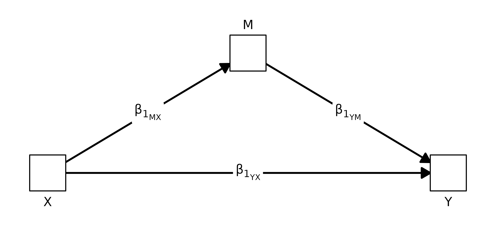
This is the classic Baron-Kenny / Sobel mediation identity in funfield’s notation: , , , and the total is .
Expectancy × Value application
The same identity carries a more specific reading when X is the imagined performance of an action, Y is the rated likelihood of actually doing that action, and M is an expected outcome of performing the action. The algebra of the decomposition is unchanged; what changes is how the two indirect arms are read.
Following the convention used in the field diagrams later in this vignette, X is drawn as a right-facing triangle (an initiating action) and Y as a left-facing triangle (an action-likelihood outcome); the mediator stays a square because it is a continuous expected outcome.
plotPathSchema(
XY_label = "F<sub>1</sub><sup>*</sup>[X,Y]",
X_shape = "rtTri",
Y_shape = "lfTri"
)
plotPathSchema(
M_label = "M",
XM_label = "F<sub>1</sub>[X,M]",
MY_label = "F<sub>1</sub>[M,Y]",
XY_label = "F<sub>1</sub>[X,Y]",
X_shape = "rtTri",
Y_shape = "lfTri"
)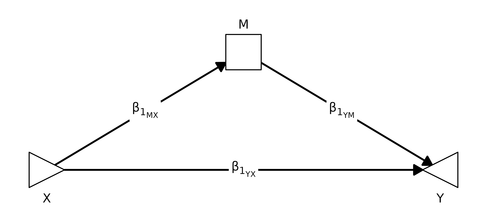
In this framing the two indirect arms operationalize the two terms of an Expectancy × Value model:
-
is the expectancy arm — how strongly imagining the
action shifts the rated expectation of that outcome
M. It is the respondent’s subjective probability (in slope form) that the action producesM. -
is the value arm — how strongly the expected outcome
M, in turn, shifts the likelihood of actually doing the action. It is how much that outcome weighs on the action-choice side: outcomes with a steeperF1[M,Y]are the ones the respondent effectively cares about.
The product
is then the indirect route’s E×V contribution: an outcome only moves
action likelihood through M to the extent the action moves
the expectation and the expectation moves the choice.
A concrete read for one of the speeding mediators
(OnTime): driving 10 mph over the limit raises the
expectation of arriving on time, so
is positive (the expectancy arm). On the choice side, respondents who
expect to be on time are more likely to report they would do the action,
so
is also positive (the value arm). Their product is the share of the
total Speed → Likelihood slope that runs through “I’ll
arrive on time” as a reason to speed. A mediator whose expectancy arm is
strong but whose value arm is near zero (an outcome people predict but
don’t weight) contributes little; one whose value arm is strong but
whose expectancy arm is near zero (an outcome people weight but the
action doesn’t shift) contributes little; the indirect effect only
lights up when both arms do.
The next two subsections walk Terms 1 and 2 through the speeding data: first the per-mediator loop fits (Term 1 one mediator at a time, plus the per-mediator residual), then the joint fit (Term 1 summed across all eight mediators, plus the single global residual).
Mediated breakdown
How does each expected outcome mediate the link between an action’s speed and how likely the respondent is to take it, averaging across people and conditions?
norm <- pathXMY(dat, X = "Speed", Y = "Likelihood", M = mediators)
## Loop pass: one X -> M -> Y regression PER MEDIATOR, fit independently.
## An F1[M,Y] row here is the slope of Likelihood on that mediator
## controlling only for Speed (no other mediators in the equation).
## pathXMY_to_F() rewrites the legacy B-labels into the F-schema for
## display; the tidy table itself still keys on the legacy labels.
pathXMY_to_F(norm$tidy_loop)
#> mediator param est se z pvalue ci.lower ci.upper
#> 1 MoneyCost F1[X,M] 0.139240506 0.015158866 9.18541709 0.000000e+00 0.10952968 0.1689513376
#> 2 MoneyCost F1[X,Y] -0.227565820 0.031873868 -7.13957333 9.361401e-13 -0.29003745 -0.1650941859
#> 3 MoneyCost F1[M,Y] -0.371345477 0.085047044 -4.36635373 1.263378e-05 -0.53803462 -0.2046563341
#> 4 MoneyCost F1[X,M]·F1[M,Y] -0.051706332 0.013892826 -3.72180087 1.978070e-04 -0.07893577 -0.0244768934
#> 5 FunDrive F1[X,M] 0.001582278 0.016507440 0.09585245 9.236378e-01 -0.03077171 0.0339362659
#> 6 FunDrive F1[X,Y] -0.280416609 0.026692098 -10.50560395 0.000000e+00 -0.33273216 -0.2281010584
#> 7 FunDrive F1[M,Y] 0.723296874 0.071036222 10.18208535 0.000000e+00 0.58406844 0.8625253108
#> 8 FunDrive F1[X,M]·F1[M,Y] 0.001144457 0.011934744 0.09589289 9.236056e-01 -0.02224721 0.0245361263
#> 9 IntQuality F1[X,M] 0.007120253 0.015298411 0.46542436 6.416276e-01 -0.02286408 0.0371045881
#> 10 IntQuality F1[X,Y] -0.282914235 0.027562230 -10.26456263 0.000000e+00 -0.33693521 -0.2288932573
#> 11 IntQuality F1[M,Y] 0.511510383 0.084549838 6.04980911 1.450176e-09 0.34579574 0.6772250213
#> 12 IntQuality F1[X,M]·F1[M,Y] 0.003642083 0.007720233 0.47175825 6.370994e-01 -0.01148929 0.0187734612
#> 13 Appropriate F1[X,M] -0.446202532 0.021400025 -20.85056166 0.000000e+00 -0.48814581 -0.4042592542
#> 14 Appropriate F1[X,Y] 0.012236624 0.044294609 0.27625538 7.823519e-01 -0.07457921 0.0990524629
#> 15 Appropriate F1[M,Y] 0.653310448 0.070525986 9.26340048 0.000000e+00 0.51508206 0.7915388398
#> 16 Appropriate F1[X,M]·F1[M,Y] -0.291508776 0.035491119 -8.21356960 2.220446e-16 -0.36107009 -0.2219474610
#> 17 OnTime F1[X,M] 0.240506329 0.017710393 13.57995446 0.000000e+00 0.20579460 0.2752180614
#> 18 OnTime F1[X,Y] -0.365904773 0.033057871 -11.06861274 0.000000e+00 -0.43069701 -0.3011125363
#> 19 OnTime F1[M,Y] 0.360209319 0.077202862 4.66575085 3.074921e-06 0.20889449 0.5115241485
#> 20 OnTime F1[X,M]·F1[M,Y] 0.086632621 0.020385649 4.24968674 2.140697e-05 0.04667748 0.1265877584
#> 21 Crash F1[X,M] 0.306170886 0.015427231 19.84613313 0.000000e+00 0.27593407 0.3364077038
#> 22 Crash F1[X,Y] -0.071610295 0.038298221 -1.86980735 6.151058e-02 -0.14667343 0.0034528386
#> 23 Crash F1[M,Y] -0.678254746 0.072501616 -9.35502933 0.000000e+00 -0.82035530 -0.5361541894
#> 24 Crash F1[X,M]·F1[M,Y] -0.207661857 0.024139694 -8.60250593 0.000000e+00 -0.25497479 -0.1603489267
#> 25 Injured F1[X,M] 0.303797468 0.015914442 19.08941984 0.000000e+00 0.27260573 0.3349892019
#> 26 Injured F1[X,Y] -0.076444825 0.039378362 -1.94129013 5.222310e-02 -0.15362500 0.0007353459
#> 27 Injured F1[M,Y] -0.667639952 0.082401626 -8.10226668 4.440892e-16 -0.82914417 -0.5061357317
#> 28 Injured F1[X,M]·F1[M,Y] -0.202827327 0.027360844 -7.41305093 1.234568e-13 -0.25645360 -0.1492010590
#> 29 Ticket F1[X,M] 0.551424051 0.017281272 31.90876602 0.000000e+00 0.51755338 0.5852947205
#> 30 Ticket F1[X,Y] 0.020471755 0.050581131 0.40473106 6.856752e-01 -0.07866544 0.1196089496
#> 31 Ticket F1[M,Y] -0.543581489 0.070950310 -7.66143926 1.842970e-14 -0.68264154 -0.4045214374
#> 32 Ticket F1[X,M]·F1[M,Y] -0.299743907 0.039987083 -7.49601834 6.572520e-14 -0.37811715 -0.2213706643
## Joint pass: a SINGLE simultaneous regression with all eight mediators
## together in the Y equation. The joint F1[M,Y] slopes are partial
## slopes net of the other seven mediators -- not comparable to the loop
## F1[M,Y] above.
pathXMY_to_F(norm$tidy_joint)
#> mediator param est se z pvalue ci.lower ci.upper
#> 1 MoneyCost F1[X,M] 0.139240506 0.01515887 9.18541709 0.000000e+00 0.10952968 0.16895134
#> 2 MoneyCost F1[M,Y] -0.028927061 0.07320582 -0.39514699 6.927344e-01 -0.17240784 0.11455372
#> 3 FunDrive F1[X,M] 0.001582278 0.01650744 0.09585245 9.236378e-01 -0.03077171 0.03393627
#> 4 FunDrive F1[M,Y] 0.409776446 0.08097880 5.06029284 4.186131e-07 0.25106091 0.56849198
#> 5 IntQuality F1[X,M] 0.007120253 0.01529841 0.46542436 6.416276e-01 -0.02286408 0.03710459
#> 6 IntQuality F1[M,Y] 0.014019165 0.08574465 0.16349901 8.701256e-01 -0.15403726 0.18207559
#> 7 Appropriate F1[X,M] -0.446202532 0.02140002 -20.85056166 0.000000e+00 -0.48814581 -0.40425925
#> 8 Appropriate F1[M,Y] 0.382971737 0.07541720 5.07804231 3.813438e-07 0.23515674 0.53078673
#> 9 OnTime F1[X,M] 0.240506329 0.01771039 13.57995446 0.000000e+00 0.20579460 0.27521806
#> 10 OnTime F1[M,Y] 0.226702427 0.07298069 3.10633448 1.894223e-03 0.08366291 0.36974195
#> 11 Crash F1[X,M] 0.306170886 0.01542723 19.84613313 0.000000e+00 0.27593407 0.33640770
#> 12 Crash F1[M,Y] -0.266502254 0.09407779 -2.83278594 4.614427e-03 -0.45089134 -0.08211316
#> 13 Injured F1[X,M] 0.303797468 0.01591444 19.08941984 0.000000e+00 0.27260573 0.33498920
#> 14 Injured F1[M,Y] -0.094829812 0.10293282 -0.92127872 3.569049e-01 -0.29657442 0.10691480
#> 15 Ticket F1[X,M] 0.551424051 0.01728127 31.90876602 0.000000e+00 0.51755338 0.58529472
#> 16 Ticket F1[M,Y] -0.121664879 0.08560263 -1.42127508 1.552368e-01 -0.28944294 0.04611318
#> 17 <NA> F1[X,Y] 0.017860284 0.05948115 0.30026797 7.639728e-01 -0.09872063 0.13444120Expectation and valuation paths, side by side
Each mediator sits on two paths. F1[X,M] is the
expectation path — how much an action’s speed shifts
that expected outcome. F1[M,Y] is the
valuation path — how much that expected outcome, in
turn, drives action likelihood. pathXMY_pairtable()
reshapes the long tidy_loop table so the two paths sit next
to each other, one row per mediator, and the mediator
column is not repeated. group_kable() then prints that
table with each parameter block set under its own spanning header.
group_kable(
pathXMY_pairtable(norm, c("f1_XM", "f1_MY")),
groups = c(" " = 1,
"Expectation paths (F1[X,M]: Speed → M)" = 4,
"Valuation paths (F1[M,Y]: M → Likelihood)" = 4),
col_labels = c("Mediator", "est", "se", "z", "p",
"est", "se", "z", "p")
)| Expectation paths (F1[X,M]: Speed → M) | Valuation paths (F1[M,Y]: M → Likelihood) | |||||||
|---|---|---|---|---|---|---|---|---|
| Mediator | est | se | z | p | est | se | z | p |
| MoneyCost | .139 | .015 | 9.185 | .000 | -.371 | .085 | -4.366 | .000 |
| FunDrive | .002 | .017 | .096 | .924 | .723 | .071 | 10.182 | .000 |
| IntQuality | .007 | .015 | .465 | .642 | .512 | .085 | 6.050 | .000 |
| Appropriate | -.446 | .021 | -20.851 | .000 | .653 | .071 | 9.263 | .000 |
| OnTime | .241 | .018 | 13.580 | .000 | .360 | .077 | 4.666 | .000 |
| Crash | .306 | .015 | 19.846 | .000 | -.678 | .073 | -9.355 | .000 |
| Injured | .304 | .016 | 19.089 | .000 | -.668 | .082 | -8.102 | .000 |
| Ticket | .551 | .017 | 31.909 | .000 | -.544 | .071 | -7.661 | .000 |
The same coefficients as a field diagram — every path in the table
becomes one labeled, signed, and weighted arrow. Edges left of the
mediator column are F1[X,M]; edges right are
F1[M,Y]. Mediator node fills show each F1[X,M]
directly (red = expected outcome drops with speed, blue = rises); the
Likelihood node fills with the implied total effect when
Speed = 1. (See the Field-style diagrams
section below for the full convention.)
plotPathXMY(norm,
X_label = "Speed", Y_label = "Likelihood",
X_shape = "rtTri",
title = "Normative field for speeding decisions")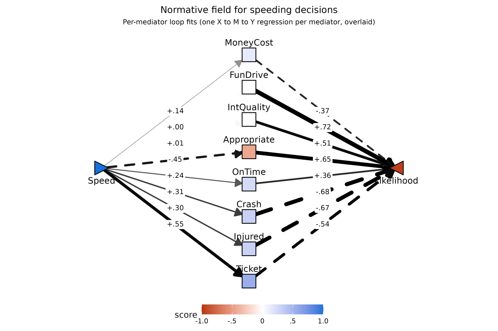
Expectation paths (F1[X,M]). Faster speeds are
expected to substantially increase Ticket,
Crash, Injured, OnTime, and (more
modestly) MoneyCost, and to substantially reduce perceived
appropriateness (Appropriate). FunDrive and
IntQuality are essentially uncorrelated with
Speed at the within-person level — perceived enjoyment of
the drive and quality of the next meeting do not move much with the
action’s speed.
Valuation paths (F1[M,Y]).
FunDrive and Appropriate are the strongest
positive drivers of whether the respondent says they’d take the action,
followed by IntQuality and OnTime.
Crash, Injured, Ticket, and
MoneyCost all suppress likelihood. The signs are intuitive
throughout.
Indirect effects (F1[X,M]·F1[M,Y])
kable0(
subset(norm$tidy_loop, param == "f1_XM * f1_MY")[, c("mediator","est","se","z","pvalue")],
digits = 3,
caption = "Indirect effects through each mediator (F1[X,M]·F1[M,Y])"
)| mediator | est | se | z | pvalue | |
|---|---|---|---|---|---|
| 4 | MoneyCost | -.052 | .014 | -3.722 | .000 |
| 8 | FunDrive | .001 | .012 | .096 | .924 |
| 12 | IntQuality | .004 | .008 | .472 | .637 |
| 16 | Appropriate | -.292 | .035 | -8.214 | .000 |
| 20 | OnTime | .087 | .020 | 4.250 | .000 |
| 24 | Crash | -.208 | .024 | -8.603 | .000 |
| 28 | Injured | -.203 | .027 | -7.413 | .000 |
| 32 | Ticket | -.300 | .040 | -7.496 | .000 |
The pathways through Ticket, Appropriate,
Crash, and Injured are all large and negative:
faster speeds are expected to produce tickets and accidents (each of
which strongly suppresses action likelihood) and to be less appropriate
(which also strongly suppresses likelihood). Notably, the loop indirect
through Ticket alone (-.30) and through
Appropriate alone (-.29) each rival the total
normative effect of -.28 indexed above
— either route, taken on its own, is large enough to mechanically
account for the entire normative drop in action likelihood. The
OnTime pathway is the lone strong positive
(+.09): faster speeds are expected to get the respondent to
the meeting on time, which increases likelihood, partially
offsetting the cost routes. This is the model’s formal account of a
reason to speed. FunDrive and
IntQuality contribute essentially nothing — because faster
speeds don’t shift those expectations, the pathways are near zero
despite their strong valuation paths. The joint multi-mediator residual
direct path (joint F1[X,Y] ≈ +.02, p ≈ .76) is
essentially zero: all eight mediators together fully account for the
total.
Joint-fit field: how the full mediator set carries the total
The loop overlay above shows each mediator’s
Speed → M → Likelihood arm in isolation. The joint
fit asks a complementary question: if all eight expected outcomes are
entered into the Likelihood regression simultaneously, how
much of the total Speed → Likelihood slope remains
unmediated? plotPathXMY(norm, from = "joint") renders the
joint simultaneous fit on the same canvas — per-mediator slopes are now
partial slopes net of the other seven mediators, and the straight
Speed → Likelihood arrow is the single global joint
F1[X,Y] residual direct path.
plotPathXMY(norm, from = "joint",
X_label = "Speed", Y_label = "Likelihood",
X_shape = "rtTri",
title = "Joint-fit field for speeding decisions")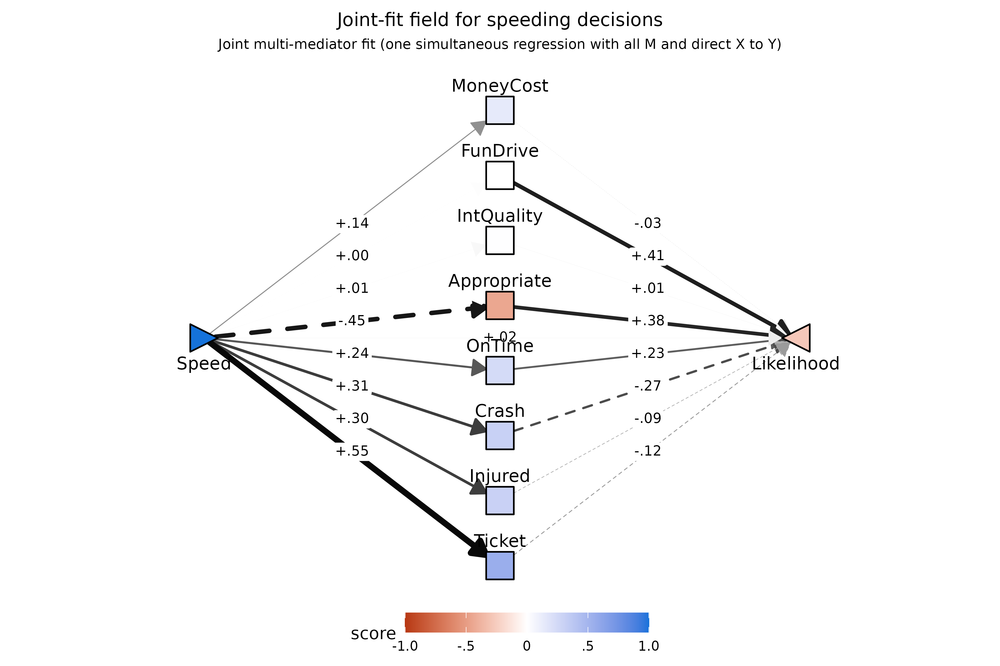
The residual joint F1[X,Y] ≈ +.02 (the labeled center
arrow) is the visual confirmation that the eight expected outcomes
collectively absorb the entire -.28 normative effect —
there is essentially nothing left for Speed to do directly.
The per-mediator joint slopes, by contrast, look quite different from
their loop counterparts: Crash → Likelihood drops from
-.68 in the loop fit to -.27 here,
FunDrive → Likelihood from +.72 to
+.41, and so on. That is the natural consequence of high
collinearity among the eight expected outcomes: each joint slope is now
a partial slope net of the others, so much of what looked like one
mediator’s “weight” in the loop view is being absorbed by its correlated
neighbors. The loop fit is the right tool for which mediator
questions; the joint fit is the right tool for system-level
diagnostics like the residual direct path.
Total moderation and its decomposition
This section mirrors the three-step normative structure above, but
for a moderator Z instead of the bare
X → Y slope: (1) the total moderation
effect — how much Z shifts the X → Y
slope — followed by (2) the per-mediator decomposition of that shift,
and later (3) the joint residual FZ[X,Y]. The normative decomposition identity gains
one extra term in the moderation case because Z can rebuild
the field in two ways: through M’s expected level
(FZ[X,M]·F1[M,Y]) and through how strongly M
is weighted (F1[X,M]·FZ[M,Y]).
(here: What personal and situational factors affect the likelihood of speeding, and why?)
The pathXMY() function is particularly useful for
understanding the personal and situational factors that may affect an
X → Y pathway, and why they may do so from within an
expectancy×value lens. The full identity is
When X is an action, M is an outcome, and
Y is the rated action likelihood, the model can account for
behavior in the manner below: - Term 0
(FZ*[X,Y]): This value, on the left-hand-side of the
equation, indicates the total degree to which the variable
Z moderates the likelihood of doing the action (here:
speeding). - Term 1 (FZ[X,M]·F1[M,Y]):
Z shifts the degree to which X is expected
to affect M — the expectation route,
which affects the likelihood of doing the action if M tends
to be valued. - Term 2 (F1[X,M]·FZ[M,Y]):
Z shifts how much outcome M affects
Y — the valuation route, which
effects the action likelihood if X tends to affect
M. - Term 3 (FZ[X,Y]): the
residual moderation of the X → Y pathway by variable
Z, after accounting for this mediator. (Here: concerns
extent to which the person/situation factor’s affect on speeding can’t
be accounted for by this mediator.)
Note also that the decomposition will result in an
approximation of the initial FZ*[X,Y] term prior
to considering the mediator. It will not be exactly equal for reasons
detailed by Muller, Judd, & Yzerbyt, (2005) - although the
decomposition will tend to be very close.
When a moderator produces a large (FZ[X,M]·F1[M,Y]) or
(F1[X,M]·FZ[M,Y]) effect, this can be described as formally
indicating a reason for the behavior.
Schematic of the moderated decomposition
The same E×V schematics from the normative section carry over once a
moderator Z is in the field — every coefficient gains a “+
FZ” companion that captures how Z shifts that arm. To match
the field-style convention used
later in this section, every fragment colored gold is an FZ term (the
part of an arm that varies with Z); the leading F1 term
stays black.
## Local helpers for the three moderation schematics below. Wrap a
## fragment in gold to flag it as an FZ coefficient, and in light
## gray to fade it into "not part of this term".
## Note: starred-total cells use * (HTML numeric entity for `*`)
## rather than a literal asterisk -- gridtext treats paired `*`
## characters as Markdown italic, which would break color spans that
## happen to bracket them.
gold <- "#F6BE00"; gray <- "#E5E5E5"
gz <- function(s) paste0("<span style='color:", gold, "'>", s, "</span>")
gr <- function(s) paste0("<span style='color:", gray, "'>", s, "</span>")
f1_XM <- "F<sub>1</sub>[X,M]"
f1_MY <- "F<sub>1</sub>[M,Y]"
f1_XY <- "F<sub>1</sub>[X,Y]"
fZ_XM <- "F<sub>Z</sub>[X,M]"
fZ_MY <- "F<sub>Z</sub>[M,Y]"
fZ_XY <- "F<sub>Z</sub>[X,Y]"
f1s_XY <- "F<sub>1</sub><sup>*</sup>[X,Y]" # starred F1 (total)
fZs_XY <- "F<sub>Z</sub><sup>*</sup>[X,Y]" # starred FZ (total)Figure 1 — Total moderation effect. Before
decomposing, index the total moderation: the single arrow from
X to Y carries both the unmediated
X → Y slope
()
and how that slope is shifted by Z
().
The whole “Term 0” of the identity above is what the green fragment
names.
plotPathSchema(
XY_label = paste0(f1s_XY, " ", gz(paste0("+ ", fZs_XY))),
X_shape = "rtTri",
Y_shape = "lfTri"
)Figure 2 — Full moderated mediation triangle. Once a
mediator is in the picture, each of the three arms carries its own F1+FZ
pair: the F1 piece is the arm as fit at the average level of
Z, and the FZ piece is how that arm bends as Z
moves.
plotPathSchema(
M_label = "M",
XM_label = paste0(f1_XM, " ", gz(paste0("+ ", fZ_XM))),
MY_label = paste0(f1_MY, " ", gz(paste0("+ ", fZ_MY))),
XY_label = paste0(f1_XY, " ", gz(paste0("+ ", fZ_XY))),
X_shape = "rtTri",
Y_shape = "lfTri"
)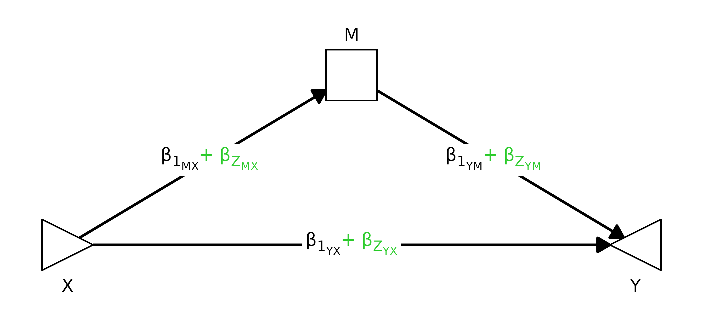
Figure 3 — One panel per term in the decomposition. Each panel shows the same triangle but fades every fragment that is not part of the term being indexed. Active F1 terms stay black, active FZ terms stay gold, and arrows whose color matches their label are the ones contributing to that panel’s product; everything else drops to light gray.
## Helper: stitch a single XY-label string for an arm where one of
## (f1, fZ) is active and the other is faded.
arm_lab <- function(f1, fZ, active = c("f1", "fZ")) {
active <- match.arg(active)
if (active == "f1") paste0(f1, " ", gr(paste0("+ ", fZ)))
else paste0(gr(f1), " ", gz(paste0("+ ", fZ)))
}
## And a fully faded label (whole "f1 + fZ" string wrapped in gray).
arm_off <- function(f1, fZ) gr(paste0(f1, " + ", fZ))
## Panel 1: FZ[X,M]·F1[M,Y] (expectation-route moderation).
p1 <- plotPathSchema(
M_label = "M",
XM_label = arm_lab(f1_XM, fZ_XM, "fZ"), # fZ active -> green line
MY_label = arm_lab(f1_MY, fZ_MY, "f1"), # f1 active -> black line
XY_label = arm_off(f1_XY, fZ_XY), # not in this term
X_shape = "rtTri", Y_shape = "lfTri",
XM_color = gold, MY_color = "black", XY_color = gray,
title = "Term 1: F<sub>Z</sub>[X,M] · F<sub>1</sub>[M,Y]"
) + ggplot2::theme(plot.title = ggtext::element_markdown(hjust = 0.5))
## Panel 2: F1[X,M]·FZ[M,Y] (valuation-route moderation).
p2 <- plotPathSchema(
M_label = "M",
XM_label = arm_lab(f1_XM, fZ_XM, "f1"),
MY_label = arm_lab(f1_MY, fZ_MY, "fZ"),
XY_label = arm_off(f1_XY, fZ_XY),
X_shape = "rtTri", Y_shape = "lfTri",
XM_color = "black", MY_color = gold, XY_color = gray,
title = "Term 2: F<sub>1</sub>[X,M] · F<sub>Z</sub>[M,Y]"
) + ggplot2::theme(plot.title = ggtext::element_markdown(hjust = 0.5))
## Panel 3: FZ[X,Y] (residual direct moderation).
p3 <- plotPathSchema(
M_label = "M",
XM_label = arm_off(f1_XM, fZ_XM),
MY_label = arm_off(f1_MY, fZ_MY),
XY_label = arm_lab(f1_XY, fZ_XY, "fZ"),
X_shape = "rtTri", Y_shape = "lfTri",
XM_color = gray, MY_color = gray, XY_color = gold,
title = "Term 3: F<sub>Z</sub>[X,Y]"
) + ggplot2::theme(plot.title = ggtext::element_markdown(hjust = 0.5))
patchwork::wrap_plots(p1, p2, p3, ncol = 3)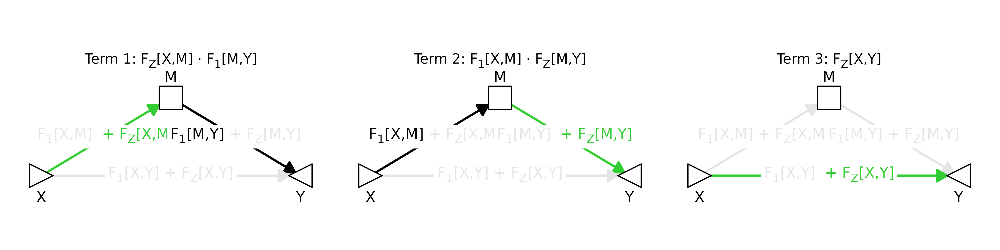
Reading across the panels: the indirect Z-routes (Terms 1 and 2) each
need one FZ arm paired with the surviving F1 on the other arm —
expectation-route moderation operates through Z shifting
F1[X,M] (producing FZ[X,M]) while the average
valuation F1[M,Y] does the carrying, and the valuation
route is the mirror image. Term 3 is what Z does
directly to Y once the indirect routes are
accounted for. The three terms sum to (an approximation of) the gold
Term-0 arrow in Figure 1.
Toggleable overlay. Side-by-side helps with comparison, but the three panels live on the same triangle — so it can be easier to see how the highlight migrates by overlaying them in place and clicking through.
## Same three frames as Figure 3, but stitched into a Back/Forward
## widget so they swap at pixel-identical layout instead of sitting
## side by side. p1/p2/p3 are reused from the chunk above.
plotsAsWidget(
list(p1, p2, p3),
panel_titles = c(
"Term 1: FZ[X,M]·F1[M,Y] (expectation route)",
"Term 2: F1[X,M]·FZ[M,Y] (valuation route)",
"Term 3: FZ[X,Y] (residual direct)"
),
width = 7,
height = 3.5,
format = "svg"
)![Term 1: FZ[X,M]·F1[M,Y] (expectation route)]()
![Term 2: F1[X,M]·FZ[M,Y] (valuation route)]()
![Term 3: FZ[X,Y] (residual direct)]()
Example of Person-level moderation: self-reported fast-driver tendency
SRFastDriver is the [0, 1] rescaled response to “I
regularly drive far over the speed limit when driving” — item
SR_30 in $traits. As a between-person trait,
it uses Z.within = FALSE. Some respondents are missing this
item:
sr <- speedingESJT$traits[, c("p","SR_30")]
sr <- sr[!is.na(sr$SR_30), ]
names(sr)[2] <- "SRFastDriver"
dat2 <- merge(dat, sr, by = "p")
cat("Persons with SRFastDriver:", length(unique(dat2$p)), "\n")
#> Persons with SRFastDriver: 313
mod_p <- pathXMY(dat2, X = "Speed", Y = "Likelihood",
M = mediators, Z = "SRFastDriver", Z.within = FALSE)The total moderation:
pathXMY_decompose() fits both the no-mediator model
(giving just FZ*[X,Y]) and the full mediated model (giving
the three components) and tabulates them per mediator.
dec <- pathXMY_decompose(dat2, X = "Speed", Y = "Likelihood",
M = mediators, Z = "SRFastDriver",
Z.within = FALSE)
kable0(dec$total, digits = 3,
caption = "Total moderation FZ*[X,Y] (no mediator)")| est | se | z | pvalue | ci.lower | ci.upper |
|---|---|---|---|---|---|
| .253 | .028 | 8.988 | .000 | .198 | .309 |
Self-reported fast-driver tendency moderates the
Speed → Likelihood link by +.25 — a
substantial effect: respondents one SD higher on
SRFastDriver reported increasing their likelihood of
speeding by 25% (i.e., an extra .25 units on the [0, 1] outcome) when
shifting from at-limit to +10+ mph speeds.
Decomposition per mediator
kable0(pathXMY_to_F(dec$components), digits = 3,
caption = "Decomposition of FZ*[X,Y] through each single mediator")| mediator | term | est | se | z | pvalue |
|---|---|---|---|---|---|
| MoneyCost | FZ[X,M]·F1[M,Y] | .011 | .005 | 2.178 | .029 |
| MoneyCost | F1[X,M]·FZ[M,Y] | .013 | .012 | 1.049 | .294 |
| MoneyCost | FZ[X,Y] (direct) | .235 | .030 | 7.812 | .000 |
| MoneyCost | sum (1+2+3) | .259 | NA | NA | NA |
| FunDrive | FZ[X,M]·F1[M,Y] | .039 | .011 | 3.704 | .000 |
| FunDrive | F1[X,M]·FZ[M,Y] | -.000 | .001 | -.000 | 1.000 |
| FunDrive | FZ[X,Y] (direct) | .212 | .027 | 7.975 | .000 |
| FunDrive | sum (1+2+3) | .251 | NA | NA | NA |
| IntQuality | FZ[X,M]·F1[M,Y] | .013 | .007 | 1.719 | .086 |
| IntQuality | F1[X,M]·FZ[M,Y] | .000 | .001 | .439 | .661 |
| IntQuality | FZ[X,Y] (direct) | .239 | .027 | 8.790 | .000 |
| IntQuality | sum (1+2+3) | .252 | NA | NA | NA |
| Appropriate | FZ[X,M]·F1[M,Y] | .073 | .016 | 4.442 | .000 |
| Appropriate | F1[X,M]·FZ[M,Y] | -.001 | .031 | -.036 | .971 |
| Appropriate | FZ[X,Y] (direct) | .181 | .038 | 4.815 | .000 |
| Appropriate | sum (1+2+3) | .253 | NA | NA | NA |
| OnTime | FZ[X,M]·F1[M,Y] | .004 | .006 | .670 | .503 |
| OnTime | F1[X,M]·FZ[M,Y] | .028 | .017 | 1.618 | .106 |
| OnTime | FZ[X,Y] (direct) | .222 | .034 | 6.556 | .000 |
| OnTime | sum (1+2+3) | .254 | NA | NA | NA |
| Crash | FZ[X,M]·F1[M,Y] | .038 | .010 | 3.994 | .000 |
| Crash | F1[X,M]·FZ[M,Y] | -.024 | .020 | -1.220 | .223 |
| Crash | FZ[X,Y] (direct) | .237 | .032 | 7.366 | .000 |
| Crash | sum (1+2+3) | .250 | NA | NA | NA |
| Injured | FZ[X,M]·F1[M,Y] | .038 | .009 | 4.032 | .000 |
| Injured | F1[X,M]·FZ[M,Y] | -.002 | .030 | -.076 | .940 |
| Injured | FZ[X,Y] (direct) | .217 | .036 | 5.994 | .000 |
| Injured | sum (1+2+3) | .253 | NA | NA | NA |
| Ticket | FZ[X,M]·F1[M,Y] | .033 | .010 | 3.226 | .001 |
| Ticket | F1[X,M]·FZ[M,Y] | .022 | .032 | .674 | .500 |
| Ticket | FZ[X,Y] (direct) | .200 | .044 | 4.579 | .000 |
| Ticket | sum (1+2+3) | .255 | NA | NA | NA |
Each mediator’s three components plus residual sum to ~.25 — that’s
the algebraic identity at work. The sum (1+2+3) row should
equal FZ*[X,Y] exactly in the linear case (small deviations
come from numerical precision).
Where does the moderation route? The largest
single-mediator expectation-route is through Appropriate:
FZ[X,M]·F1[M,Y] = .073. Term 2 (valuation route) is
negligible for every mediator here — fast drivers don’t differentially
weight outcomes, they have different expectations. And
most of FZ*[X,Y] sits in the residual
FZ[X,Y] column (≈ .18–.24 for every mediator).
That isn’t a failure of the decomposition — it’s the signature of
moderation routed through multiple mediators jointly. With a
single mediator in the model, every other mediator’s contribution gets
absorbed into the residual.
Can we identify likely reasons that regular speeders tend to speed?
group_kable(
pathXMY_pairtable(mod_p, c("fZ_XM", "fZ_MY")),
groups = c(" " = 1,
"Fast-driver moderation: expectation arm (FZ[X,M])" = 4,
"Fast-driver moderation: valuation arm (FZ[M,Y])" = 4),
col_labels = c("Mediator", "est", "se", "z", "p",
"est", "se", "z", "p")
)| Fast-driver moderation: expectation arm (FZ[X,M]) | Fast-driver moderation: valuation arm (FZ[M,Y]) | |||||||
|---|---|---|---|---|---|---|---|---|
| Mediator | est | se | z | p | est | se | z | p |
| MoneyCost | -.041 | .015 | -2.790 | .005 | .094 | .090 | 1.051 | .293 |
| FunDrive | .063 | .015 | 4.099 | .000 | .064 | .061 | 1.052 | .293 |
| IntQuality | .028 | .016 | 1.789 | .074 | .062 | .077 | .804 | .421 |
| Appropriate | .137 | .021 | 6.420 | .000 | .003 | .069 | .036 | .971 |
| OnTime | .012 | .018 | .664 | .507 | .115 | .072 | 1.606 | .108 |
| Crash | -.069 | .015 | -4.654 | .000 | -.079 | .065 | -1.220 | .222 |
| Injured | -.072 | .016 | -4.425 | .000 | -.007 | .097 | -.076 | .940 |
| Ticket | -.079 | .019 | -4.182 | .000 | .039 | .058 | .677 | .498 |
The same coefficients as a Z-overlay field — the
same graph layout as the normative field above, but with each
F1 swapped for its FZ counterpart. Each edge
is therefore the per-unit-SRFast change in that path’s
weight; coefficients near zero fade to light gray so the strong
moderation paths stand out cleanly. Nodes are drawn white because
expected scores have no meaning in a per-unit-Z slope field.
scale_max = .3 is set tighter than the normative default
.8 because FZ magnitudes are typically smaller than
F1’s.
plotPathXMY(mod_p,
X_label = "Speed", Y_label = "Likelihood",
Z_label = "SRFast", X_shape = "rtTri",
Z_overlay = TRUE,
scale_max = 0.3,
title = "Z overlay: how SRFast shifts path weights")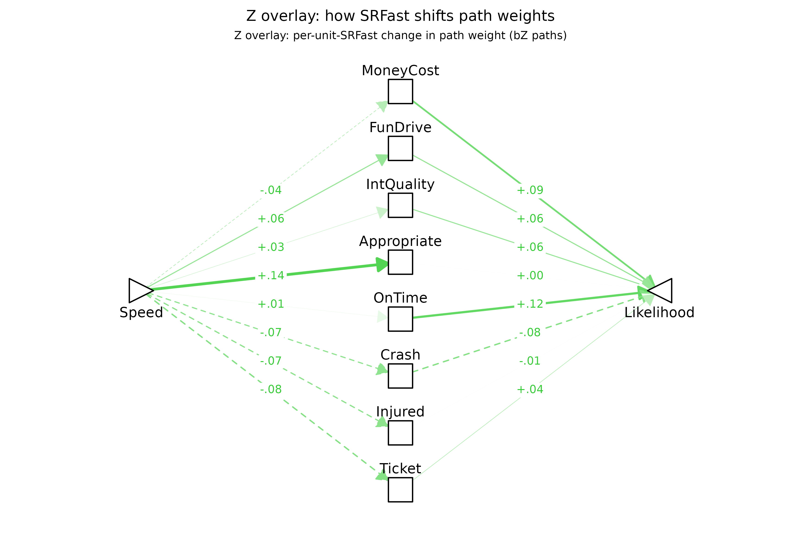
On the expectation side (FZ[X,M]),
self-described fast drivers expect speeding to be less catastrophic —
smaller Crash, Injured, Ticket,
and MoneyCost shifts (all p < .01) — more
enjoyable (FunDrive, p < .001), and
substantially more role-appropriate (Appropriate,
p < .001, by far the largest effect). Six of the eight
expectation paths are significantly moderated.
On the valuation side (FZ[M,Y]),
not one of the eight paths reaches p < .05; the
nearest is OnTime (b = +.12, p = .11).
This is not because the valuation-arm coefficients are smaller — their
mean |FZ| is essentially equal to that on the expectation
arm — but because their standard errors run roughly 4× larger. The SE
asymmetry itself is taken up in detail under the route-diagram section
below; the careful reading here is that every individually
significant moderation effect across both the time-pressure and
fast-driver fits lives on the expectation arm, but whether the valuation
arm carries comparable true moderation that this sample size cannot
resolve is left genuinely open. The one place a valuation-arm effect
does clear individual significance — the item “I like to
arrive at appointments in plenty of time” moderating the weight
placed on OnTime — is taken up below under When does Term 2 carry the
moderation?.
Does these differing expectancies & values create reasons for speeding?
As before, the two columns are the model’s two
routes by which the moderator reshapes the overall
Speed → Likelihood link — the expectation
route (FZ[X,M]·F1[M,Y]) and the valuation
route (F1[X,M]·FZ[M,Y]). Significant entries are
this model’s formal account of why self-described fast drivers
are more likely to speed: the decomposition section
below shows that fast-driver tendency moderates the direct
Speed → Likelihood path by FZ*[X,Y] =
+.25, and these per-mediator route effects are the pieces that
sum toward it.
plotPathXMY() carries a per-route view
(route = "expectation" / route = "valuation")
that visualizes the two columns of the table below directly. Following
the package’s color convention — gold for anything that is a pure
FZ coefficient — each route panel renders one arm in gold
and the other in black:
-
Expectation panel:
FZ[X,M](SRFast)on the gold left arm,F1[M,Y]on the black right arm. A gold-black chain through a mediator says fast drivers’ expectations of speeding’s outcomes shift on that mediator AND those outcomes carry weight for action. -
Valuation panel:
F1[X,M]on the black left arm,FZ[M,Y](SRFast)on the gold right arm. A black-gold chain says speeding produces that outcome AND fast drivers weight it differently.
A complete left-to-right path through any mediator — one where both
arms are visibly thick — is the diagram’s claim that we’ve identified a
reason the moderator shifts the focal action. The pathXMY_pairtable() table
immediately below gives the formal indirect-product backing for that
visual reading.
plotPathXMY_routes(dec,
X_label = "Speed", Y_label = "Likelihood",
Z_label = "SRFast", X_shape = "rtTri",
scale_max = 0.5)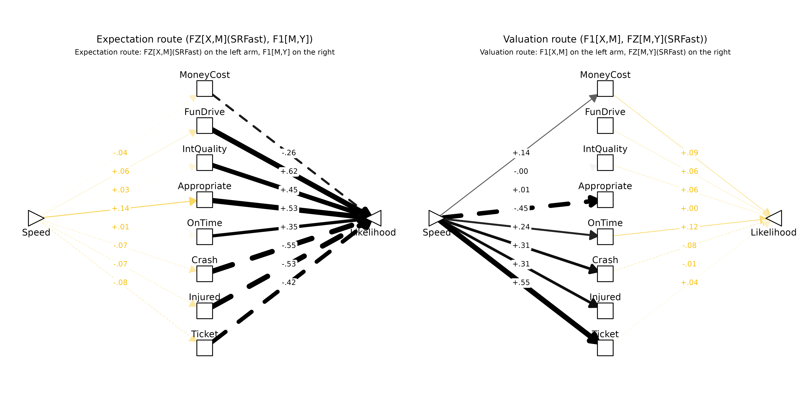
Both panels carry chains of comparable visible weight. In the
expectation panel, Speed → Appropriate → Likelihood (+.14 ×
+.53), Speed → Crash → Likelihood (-.07 × -.55), and
Speed → Ticket → Likelihood (-.08 × -.42) are the
strongest. In the valuation panel,
Speed → OnTime → Likelihood (+.24 × +.12) and
Speed → Crash → Likelihood (+.31 × -.08) trace chains where
both arms have visible weight. The mean |FZ| across
mediators is in fact essentially identical on the two arms (about .06
each).
What differs across panels is precision. The standard errors
on the valuation-arm FZ[M,Y] coefficients run roughly 4×
the standard errors on the expectation-arm FZ[X,M]
coefficients in this fit:
fzxm <- subset(mod_p$tidy_loop,
param == "fZ_XM" & !is.na(mediator))[, c("mediator","est","se","pvalue")]
fzmy <- subset(mod_p$tidy_loop,
param == "fZ_MY" & !is.na(mediator))[, c("mediator","est","se","pvalue")]
names(fzxm)[2:4] <- c("fZ_XM","SE_XM","p_XM")
names(fzmy)[2:4] <- c("fZ_MY","SE_MY","p_MY")
cmp <- merge(fzxm, fzmy, by = "mediator")
cmp$SE_ratio <- cmp$SE_MY / cmp$SE_XM
kable0(cmp, digits = 3,
col.names = c("mediator", "FZ[X,M]", "SE_XM", "p_XM",
"FZ[M,Y]", "SE_MY", "p_MY", "SE_ratio"),
caption = paste0("Per-mediator comparison of expectation-arm (FZ[X,M]) and ",
"valuation-arm (FZ[M,Y]) moderation coefficients. ",
"Mean |FZ| is similar across arms (",
sprintf("%.3f", mean(abs(cmp$fZ_XM))), " vs ",
sprintf("%.3f", mean(abs(cmp$fZ_MY))),
") but mean SE differs by ",
sprintf("%.1fx", mean(cmp$SE_MY) / mean(cmp$SE_XM)),
"."))| mediator | FZ[X,M] | SE_XM | p_XM | FZ[M,Y] | SE_MY | p_MY | SE_ratio |
|---|---|---|---|---|---|---|---|
| Appropriate | .137 | .021 | .000 | .003 | .069 | .971 | 3.244 |
| Crash | -.069 | .015 | .000 | -.079 | .065 | .222 | 4.342 |
| FunDrive | .063 | .015 | .000 | .064 | .061 | .293 | 3.956 |
| Injured | -.072 | .016 | .000 | -.007 | .097 | .940 | 5.932 |
| IntQuality | .028 | .016 | .074 | .062 | .077 | .421 | 4.936 |
| MoneyCost | -.041 | .015 | .005 | .094 | .090 | .293 | 6.115 |
| OnTime | .012 | .018 | .507 | .115 | .072 | .108 | 3.893 |
| Ticket | -.079 | .019 | .000 | .039 | .058 | .498 | 3.036 |
The same-magnitude moderation effect therefore sits at p
< .001 on the expectation arm and well outside p < .05 on
the valuation arm. The structural reason is in the design.
X is the experimentally varied scenario factor: every
respondent rates scenarios at both Speed = 1 and
Speed = 0, so X has guaranteed within-person
variation for every person, and therefore so does the X × Z
interaction term used to estimate FZ[X,M]. M,
by contrast, is each respondent’s rating of an expected outcome
at those scenarios, and many respondents give the same rating in both
speed conditions — a respondent who reports Crash
likelihood as 0 whether Speed = 1 or Speed = 0
contributes zero within-person variation in M and therefore
zero in the M × Z term used to estimate
FZ[M,Y]. The effective sample of informative persons is
therefore everyone for FZ[X,M] but only the subset whose
M actually moves with Speed for
FZ[M,Y] — and that latter subset can be small enough to
inflate SEs several-fold, as it does here.
This matters for how the route diagrams should be read. The “any
visible chain is a candidate reason” rule applies symmetrically across
the two panels, but chains on the valuation arm should be weighted by
the larger uncertainty: a magnitude-equivalent chain on the valuation
side is a weaker statistical claim than the same chain on the
expectation side, not because the effect is smaller but because we can
resolve it less sharply. The pathXMY_pairtable() table
below is the formal counterpart that combines estimates with their
uncertainties.
The same data shown as a toggle (click Forward to watch the green arm slide from left to right):
plotPathXMY_widget_routes(dec,
X_label = "Speed", Y_label = "Likelihood",
Z_label = "SRFast", X_shape = "rtTri",
scale_max = 0.5,
format = "svg"), F1[M,Y])]()
![Valuation route (F1[X,M], FZ[M,Y](SRFast))]()
group_kable(
pathXMY_pairtable(mod_p, c("fZ_XM * f1_MY", "f1_XM * fZ_MY")),
groups = c(" " = 1,
"Expectation route (FZ[X,M] × F1[M,Y])" = 4,
"Valuation route (F1[X,M] × FZ[M,Y])" = 4),
col_labels = c("Mediator", "est", "se", "z", "p",
"est", "se", "z", "p")
)| Expectation route (FZ[X,M] × F1[M,Y]) | Valuation route (F1[X,M] × FZ[M,Y]) | |||||||
|---|---|---|---|---|---|---|---|---|
| Mediator | est | se | z | p | est | se | z | p |
| MoneyCost | .011 | .005 | 2.178 | .029 | .013 | .012 | 1.049 | .294 |
| FunDrive | .039 | .011 | 3.704 | .000 | -.000 | .001 | -.000 | 1.000 |
| IntQuality | .013 | .007 | 1.719 | .086 | .000 | .001 | .439 | .661 |
| Appropriate | .073 | .016 | 4.442 | .000 | -.001 | .031 | -.036 | .971 |
| OnTime | .004 | .006 | .670 | .503 | .028 | .017 | 1.618 | .106 |
| Crash | .038 | .010 | 3.994 | .000 | -.024 | .020 | -1.220 | .223 |
| Injured | .038 | .009 | 4.032 | .000 | -.002 | .030 | -.076 | .940 |
| Ticket | .033 | .010 | 3.226 | .001 | .022 | .032 | .674 | .500 |
The expectation route does essentially all the work. Fast-driver
tendency strengthens the indirect pull toward the faster action through
Appropriate (p < .001, the largest single
route), FunDrive, Crash, Injured,
and Ticket (all p < .005) and
MoneyCost (p = .03) — six significant
expectation-route reasons. The valuation route contributes nothing
significant (nearest: OnTime, p = .11). So the
reason fast drivers speed more is, item by item, that they
expect speeding to be more appropriate and less costly — not that they
weight those outcomes differently. The contrast with the time-pressure
result is informative: time pressure shifts the upside (OnTime,
IntQuality); fast-driver tendency shifts the downside (the
expected costs of speeding feel smaller, and the action feels more
appropriate). In both cases the moderation routes almost entirely
through shifted expectations.
Field-style diagrams
plotPathXMY() renders the X-M-Y structure as a
ggplot object in the funfield visualization style:
- Nodes are colored by their expected score when X is held at
1 on a continuous red→white→blue gradient over the
[-1, 1]range (scale_fill_gradient2()). X is by definition full blue (score = 1); each mediator is colored by itsF1[X,M]coefficient; Y is colored by the implied total effect at X = 1. - The default shape convention reads action-status off the variable
role: squares for regular continuous variables, triangles for action
variables. Y (Likelihood) is drawn as a left-facing
triangle (
Y_shape = "lfTri") to mark it as the focal action node; in this EXSJT, X (Speed) is itself an imagined action and so is drawn as a right-facing triangle (X_shape = "rtTri"). Mediators are always squares. For a Y that is a regular continuous outcome rather than an action likelihood, passY_shape = "square". - Node labels sit outside the shapes: above for any mediator, below for X and Y. This convention carries to the fan view so labels stay unambiguously attached to their box.
- Edges are dashed for negative, solid for
positive, with thickness scaled by path magnitude (capped at
scale_max = .8). Edge labels show the fullF1 + FZ(Z)form. Arrowheads are clipped to the node perimeter.
Single-mediator triangle for the dominant route
through Appropriate:
plotPathXMY(dec, mediator = "Appropriate",
X_label = "Speed", Y_label = "Likelihood",
Z_label = "SRFast",
X_shape = "rtTri",
title = "Speed -> Appropriate -> Likelihood (Z = SRFastDriver)")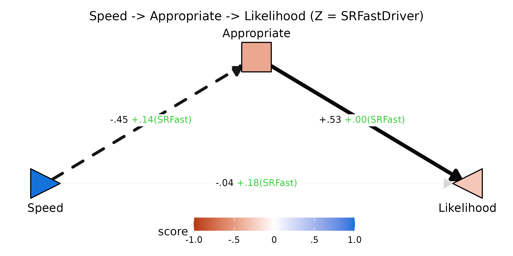
Reading the diagram: a one-unit increase in Speed lowers
Appropriate by .45 on average (dashed edge,
negative), but among fast drivers (high SRFast) that drop
is dampened by +.14 — they perceive faster driving as less of an
appropriateness violation. Appropriate strongly drives
Likelihood (+.53, solid) and that valuation is not
moderated by SRFast (≈ +.00). The residual
FZ[X,Y] direct path (+.18) reflects the joint contribution
of the seven other mediators not shown here. The Y node renders in the
red half of the gradient because the total predicted Y at
Speed = 1 is negative — speeding produces a net-negative
expected likelihood when only Appropriate mediates.
Full multi-mediator fan view — pass no
mediator argument and all available mediators are arranged
in a fan between X and Y:
plotPathXMY(dec,
X_label = "Speed", Y_label = "Likelihood",
Z_label = "SRFast",
X_shape = "rtTri",
title = "Full X-M-Y field for speeding decisions")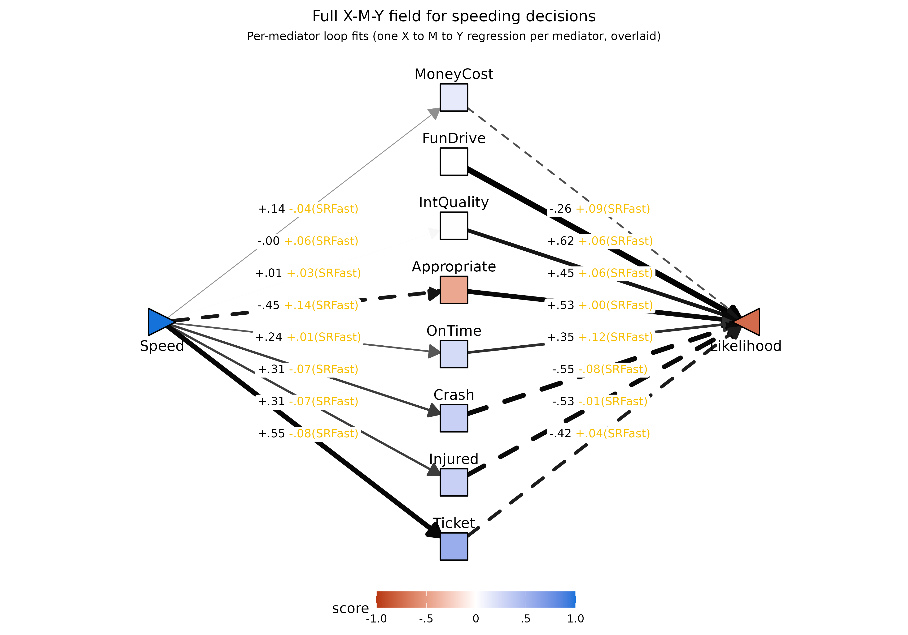
The fan diagram is a summary overlay, not a single
fit. The mediator arms are read off the per-mediator loop fits
— one X to M to Y model per mediator — so each
Speed -> M_k and M_k -> Likelihood arm
is interpretable on its own without worrying about how the other
mediators are competing for variance. Because no single direct path
would be coherent in such an overlay, no direct X to Y arrow is
drawn here; the residual direct path of the joint simultaneous
fit lives instead in the joint-fit
field section in the normative-model block above.
The mediator column reveals which expectations move with Speed:
Ticket (+.55) and Appropriate (-.45) are the
strongest in opposite directions; FunDrive and
IntQuality are essentially unaffected by Speed
(near-white). The right column of edges shows the valuation weights
(F1[M,Y]). Edge thickness in the fan diagnoses where the
indirect-effect mass concentrates.
Joint multi-mediator fit: residual direct path and stability
The same pathXMY() call that produced the loop
coefficients also returns simultaneous-fit parameters in its joint-fit
table (tidy_joint). The most useful of these are the
residual direct path and its Z-moderation:
joint_yx <- subset(mod_p$tidy_joint, param %in% c("f1_XY_joint","fZ_XY_joint"))
joint_yx$mediator <- NULL
kable0(pathXMY_to_F(joint_yx), digits = 3,
caption = "Residual direct path X -> Y from the joint fit of all 8 mediators (Z = SRFastDriver)")| param | est | se | z | pvalue | ci.lower | ci.upper | |
|---|---|---|---|---|---|---|---|
| 33 | F1[X,Y] | -.046 | .058 | -.788 | .430 | -.159 | .068 |
| 34 | FZ[X,Y] | .155 | .052 | 2.998 | .003 | .054 | .257 |
The joint F1[X,Y] is the residual
Speed -> Likelihood path controlling for all eight
expected outcomes simultaneously. If the measured mediator set has
captured the within-person mechanisms, it should be near zero. The joint
FZ[X,Y] is the analogous diagnostic for moderation: an
SRFastDriver effect on Speed -> Likelihood
that does not run through any of the eight outcomes shows up
here. The decomposition table earlier in this section flagged the
residual FZ[X,Y] as substantial (≈ .18-.24) for every
single-mediator fit; the joint result tells us whether the mediator set
collectively absorbs that moderation.
Why prefer loop coefficients for per-mediator
inference. The joint fit also returns joint
F1[M,Y] and FZ[M,Y] rows. When mediators are
numerous and correlated — as the eight expected outcomes here certainly
are — the M-by-Z product terms used to estimate the joint
FZ[M,Y] are highly collinear with each other, which
inflates the standard errors substantially compared to the
single-mediator loop fit (Wood, Adanu, & Harms, 2025). The loop
estimates are not contaminated by this multicollinearity because each
loop fit estimates only one mediator’s FZ[M,Y] at a time.
The asymmetry can be made explicit:
loop <- subset(mod_p$tidy_loop,
param == "fZ_MY" & !is.na(mediator))[, c("mediator","est","se")]
join <- subset(mod_p$tidy_joint,
param == "fZ_MY_joint")[, c("mediator","est","se")]
names(loop)[2:3] <- c("loop_est","loop_se")
names(join)[2:3] <- c("joint_est","joint_se")
cmp <- merge(loop, join, by = "mediator")
cmp$se_inflation <- cmp$joint_se / cmp$loop_se
kable0(cmp, digits = 3,
caption = "FZ[M,Y] (valuation moderation) per mediator: loop vs joint, with SE inflation factor")| mediator | loop_est | loop_se | joint_est | joint_se | se_inflation |
|---|---|---|---|---|---|
| Appropriate | .003 | .069 | -.025 | .065 | .941 |
| Crash | -.079 | .065 | -.115 | .104 | 1.610 |
| FunDrive | .064 | .061 | .104 | .086 | 1.406 |
| Injured | -.007 | .097 | .050 | .114 | 1.182 |
| IntQuality | .062 | .077 | .082 | .079 | 1.032 |
| MoneyCost | .094 | .090 | .058 | .072 | .797 |
| OnTime | .115 | .072 | .106 | .074 | 1.034 |
| Ticket | .039 | .058 | -.067 | .060 | 1.041 |
Joint SEs are inflated compared to the loop SEs (see the
se_inflation column), and the joint point estimates jitter
substantially across mediators when the mediator set is large and
correlated. For inference about which mediators carry the
valuation-route moderation, the loop coefficient is the right tool. The
joint fit is best treated as a system-level diagnostic — most useful for
the joint F1[X,Y] / FZ[X,Y] (which are stable,
because they estimate a single residual path), less useful for the
per-mediator joint coefficients.
Wood, D., Adanu, E. K., & Harms, P. D. (2025). Expectancy x value models of the relations between demographic, psychological, and situational factors and speeding behavior. Journal of Safety Research, 93, 135-147. doi:10.1016/j.jsr.2025.02.012
Two-panel low-Z vs high-Z view
plotPathXMY_ZLH() draws the field at a low and high
value of Z side-by-side, with coefficients collapsed to
their effective value at that Z. This makes the moderation
visually concrete: edge widths thin out, node colors fade, and the
implied total effect on Y shifts between panels.
plotPathXMY_ZLH(dec,
X_label = "Speed", Y_label = "Likelihood",
Z_label = "SRFast",
X_shape = "rtTri",
Z_levels = c(-1, 1))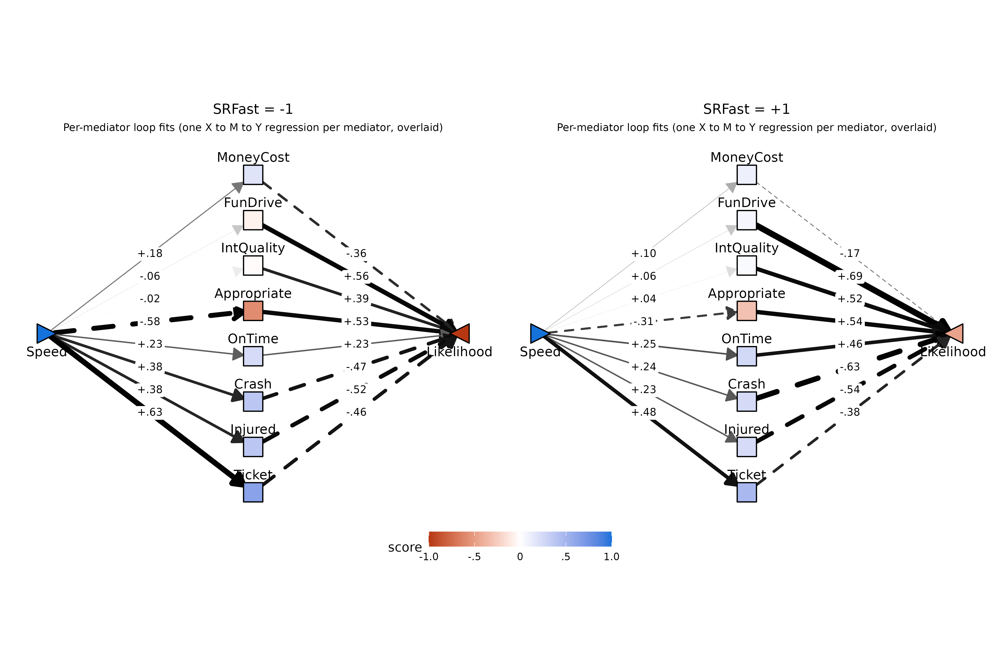
At SRFast = -1 (low fast-driver tendency) the expected
costs of speeding are maximal: large red Appropriate node,
thick negative edges from
Crash/Injured/Ticket, and the
Likelihood triangle glows deep red — the field predicts a
substantial decrease in action likelihood as Speed
rises.
At SRFast = +1 the same field has visibly attenuated:
every cost mediator’s Speed-loading shrinks (smaller numbers, thinner
edges), the Appropriate node lightens, and the
Likelihood triangle fades — the predicted decrease is much
smaller. Self-reported fast drivers expect speeding to be less costly
across the board, and the field-level summary captures all of those
shifts at once.
Toggleable Z-scrubbing widget
The side-by-side panels make the contrast easy to compare, but
overlaying them in place and toggling makes the moderation feel even
sharper — you can watch the edge thicknesses and node colors swap as you
click forward / back. plotPathXMY_widget() renders one
frame per Z value and embeds them in a self-contained HTML widget with
Back / Forward buttons.
plotPathXMY_widget(dec,
X_label = "Speed", Y_label = "Likelihood",
Z_label = "SRFast",
X_shape = "rtTri",
format = "svg")![SRFast = -1]()
![SRFast = +0]()
![SRFast = +1]()
The default Z_levels = c(-1, 0, 1) toggles between one
SD below the mean, the mean, and one SD above. The widget renders in
HTML output only; in PDF the chunk is skipped. Path coefficients are
linear in Z so frames between the endpoints are trivially
interpolatable; values at |Z| > 1 are often outside the
well-supported range of the data, so are not in the default — pass an
explicit Z_levels vector if you want a wider range.
Quickly screening for moderator candidates
Fast-driver tendency was an obvious moderator to try. But the traits
table holds 30 self-report items — most untouched here — and each
pathXMY() fit takes a couple of seconds. That’s fine for
one moderator at a time but expensive as a screening tool across the
whole item set. A shortcut falls out of the structure of the total
moderation itself.
The no-mediator coefficient FZ*[X,Y] from a fit with
trait T as the moderator is, in effect, the slope of each
person’s within-person Speed effect on Likelihood (ΔL)
regressed on T. The simple Pearson correlation of
T with ΔL across persons is a standardized
form of that same regression slope:
screenModerators() packages this shortcut as a single
call, and extends it to the per-mediator expectation (MX)
and valuation (YM) arms as well:
screen <- screenModerators(psi = dat,
X = "Speed",
Y = "Likelihood",
M = mediators,
traits = speedingESJT$traits)
#> screenModerators: skipping non-numeric trait columns: employment, education, income, ethnicity, gender
## Attach the codebook label so the table is readable.
labels <- speedingESJT$codebook$trait_items[, c("var","label")]
screen <- merge(screen, labels,
by.x = "trait", by.y = "var", all.x = TRUE, sort = FALSE)
screen_yx <- subset(screen, target == "YX")
screen_yx <- screen_yx[order(-abs(screen_yx$beta)), ]
kable0(head(screen_yx, 15)[, c("trait","r","beta","p","label")],
digits = 3, row.names = FALSE,
caption = paste0("Top 15 traits ranked by the within-person ",
"Speed effect on Likelihood: a fast screen ",
"for total-moderation candidates."))| trait | r | beta | p | label |
|---|---|---|---|---|
| SR_30 | .494 | .254 | .000 | I regularly drive far over the speed limit when driving. |
| SR_05 | .237 | .122 | .000 | I love dangerous situations. |
| SR_01 | -.237 | -.121 | .000 | I try to follow the rules. |
| SR_12 | -.157 | -.081 | .005 | I value my time. |
| age | -.146 | -.075 | .010 | NA |
| SR_25 | .134 | .069 | .017 | I tend to feel depressed, blue. |
| SR_26 | -.132 | -.068 | .019 | I am emotionally stable, not easily upset. |
| SR_04 | .130 | .066 | .021 | I love excitement. |
| SR_02 | -.127 | -.065 | .024 | I try hard to maintain good relationships with others. |
| SR_22 | .121 | .062 | .031 | I have difficulty getting started on tasks. |
| SR_06 | -.118 | -.061 | .036 | I try hard to save money. |
| SR_03 | -.111 | -.057 | .049 | I like to arrive at appointments in plenty of time. |
| SR_11 | .100 | .051 | .078 | I tend to be lazy. |
| SR_16 | .099 | .051 | .081 | I am dominant, act as a leader. |
| SR_27 | -.097 | -.050 | .085 | I am fascinated by art, music, or literature. |
These correlations track the formal FZ*[X,Y] from a full
pathXMY_decompose() fit on the same data with a clean
algebraic relationship. The OLS slope of
on a trait
across persons is
by the standard regression-from-correlation identity.
pathXMY() z-standardizes the between-person moderator (see
Z.within = FALSE in ?pathXMY), so its reported
FZ*[X,Y] is the slope expressed per SD of
rather than per raw unit of
:
The
cancels, which is why the ratio
is the same across items even though items differ in their raw response
variances. In this fit
,
so the empirical relationship is
,
with the constant being just the variability of the per-person Speed
effect in this sample. For “which traits should I look at next” the
screen is a useful shortcut: a few cor.test() calls in
place of 30 SEM fits.
Where the p-values disagree, and the estimator that
matches. The b₂ identity above is exact; the p-value
identity is not — cor.test() and pathXMY() use
different finite-sample SE formulas, so the two p-values can
differ by a factor of 20× or more at the tails. The estimator that
does reproduce the screen’s p exactly is the same
regression with person fixed effects — the
panel-econometrics identity that first-differencing equals the within
transformation under a balanced design:
## Balanced 2-level within-person design: pull raw PSI (since `dat`
## has Speed within-person-deviated for the pathXMY pipeline) and
## drop the middle Speed level so each person contributes the
## endpoint difference L|Speed=1 - L|Speed=0.
d2 <- subset(speedingESJT$PSI, Speed != 0.5)
d2 <- merge(d2,
transform(speedingESJT$traits[, c("p","SR_30")],
SRz = as.numeric(scale(SR_30)))[, c("p","SRz")],
by = "p")
d2 <- d2[order(d2$p, d2$Speed), ]
## (A) per-person Δ regression -- the "screen" form, 1 row per person
dL <- tapply(d2$Likelihood, d2$p, function(L) L[2] - L[1])
SRz <- tapply(d2$SRz, d2$p, `[`, 1)
coef(summary(lm(dL ~ SRz)))["SRz", ]
#> Estimate Std. Error t value Pr(>|t|)
#> 2.536665e-01 2.534038e-02 1.001037e+01 1.245500e-20
## (A') what screenModerators() actually calls -- Pearson cor.test on
## the same Δ vector. The `estimate` it returns is `r` (the
## standardized form of b₂; SD(dL) cancels into SD-units) but the
## *t*-statistic and *p*-value are the same hypothesis test.
ct <- cor.test(dL, SRz)
c(r = unname(ct$estimate), t = unname(ct$statistic), p = ct$p.value)
#> r t p
#> 4.936504e-01 1.001037e+01 1.245500e-20
## (B) same numbers from person fixed effects on the 2N-row form
coef(summary(lm(Likelihood ~ Speed * SRz + factor(p),
data = d2)))["Speed:SRz", ]
#> Estimate Std. Error t value Pr(>|t|)
#> 2.536665e-01 2.534038e-02 1.001037e+01 1.245500e-20All three calls return the same t and p to machine
precision; (A) and (B) additionally share b₂ and its SE. The screen’s
cor.test-based p IS the per-person Δ regression’s
p IS the person-fixed-effects p. pathXMY’s p
is asymptotically the same with a cluster-robust SE that differs in
finite samples, and a random-intercept LMER ((1 | p)) gives
still-different SEs because it pools person variance through a normal
prior. Pick the SE that matches your inferential intent.
The lm-cor.test equivalence above is a recurring pattern
across funfield: wherever a coefficient can be re-expressed
as a Pearson correlation between two derived per-unit summaries (per
person, per situation, per scenario), the bare cor.test()
recovers the same t and p as the corresponding
regression slope test.
The substance of the list is worth a moment. Beyond the self-reported
fast-driver item at the top (which we already investigated), the
strongest moderators of Speed → Likelihood in this sample include
rule-following (“I try to follow the rules” — negative), love
of dangerous situations and excitement, time valuation (“I value my
time” — negative, which is interesting given its valence),
age (older respondents speed less), depressive feelings,
emotional stability (negative), and care for relationships (negative).
Several of these would not have been obvious a priori; the
screen makes them visible without a guess-and-check pass through 30
fits.
Path-specific moderators. The YX screen
captures moderation of the total
Speed → Likelihood path. A trait whose effect concentrates
in a single field path — strong moderation of one mediator’s arm, with
little contribution to the total — will rank lower in the
YX table than its path-specific importance suggests. The
YM rows of the same screen object identify
those single-arm valuation-route moderators directly:
screen_ym <- subset(screen, target == "YM")
screen_ym <- screen_ym[order(-abs(screen_ym$beta)), ]
kable0(head(screen_ym, 10)[, c("trait","mediator","beta","p","label")],
digits = 3, row.names = FALSE,
caption = paste0("Top 10 valuation-arm (YM) moderation ",
"candidates: trait moderation of the ",
"M -> Likelihood path."))| trait | mediator | beta | p | label |
|---|---|---|---|---|
| SR_03 | OnTime | .217 | .000 | I like to arrive at appointments in plenty of time. |
| SR_23 | IntQuality | .206 | .001 | I am reliable, can always be counted on. |
| SR_07 | Crash | -.198 | .001 | I would say that I am a skilled driver. |
| SR_27 | MoneyCost | -.191 | .003 | I am fascinated by art, music, or literature. |
| SR_27 | OnTime | -.181 | .002 | I am fascinated by art, music, or literature. |
| SR_21 | MoneyCost | .177 | .010 | I tend to be disorganized. |
| SR_22 | MoneyCost | .171 | .009 | I have difficulty getting started on tasks. |
| SR_18 | Crash | -.170 | .009 | I am compassionate, have a soft heart. |
| SR_03 | Appropriate | .170 | .000 | I like to arrive at appointments in plenty of time. |
| SR_26 | MoneyCost | -.166 | .008 | I am emotionally stable, not easily upset. |
The item “I like to arrive at appointments in plenty of
time” sits at the top of the YM table moderating
OnTime, even though it only reaches rank ~12 in the
YX screen above (r = −.11, p = .049,
barely clearing significance). The next section works through exactly
this case. Several other path-specific valuation moderators surface here
that don’t feature in the YX top-10: “I am reliable,
can always be counted on” on IntQuality, “I would
say that I am a skilled driver” on Crash, and “I
am fascinated by art, music, or literature” on
MoneyCost and OnTime. The expectation-arm
(MX) screen is in
subset(screen, target == "MX") and works analogously. The
total-effect screen is the right tool for “where should I look first”;
the path-specific screens are the tool for “what role does this trait
play in the field”.
Per-arm scaling caveats are documented in
?screenModerators. The short version: YX and
MX p-values come from a clean between-person
cor.test(), but the YM p comes from
an OLS interaction regression that does not account for within-person
clustering — it’s optimistic by a small factor. Use the YM ranking for
screening; fit pathXMY_decompose() for inference.
When does Term 2 carry the moderation?
A counter-example shows valuation routing in isolation — and brings
out a conceptual point about what these moderation tests are measuring.
Consider the item “I like to arrive at appointments in plenty of
time.” as the moderator, with OnTime as the focal
mediator.
The choice of OnTime here is not arbitrary. The path
coefficient F1[OnTime,Y] answers a fairly specific
empirical question: how much does an increased prospect of arriving on
time raise the likelihood of speeding? That is closely related to what
the item is asking the respondent to introspect about — how strongly the
prospect of being on time motivates them. The trait endorsement and the
modeled path coefficient can be viewed as two routes to a similar
underlying quantity: one a single self-report sentence, the other a
within-person regression on observed action ratings across scenarios.
Where a self-report item is conceptually close to a particular field
path in this way, we have some prior reason to look for moderation of
that path specifically.
tr <- speedingESJT$traits[, c("p","SR_03")]
names(tr)[2] <- "LikeToArriveOnTime"
tr <- tr[!is.na(tr$LikeToArriveOnTime), ]
dat_lot <- merge(dat, tr, by = "p")
dec_lot <- pathXMY_decompose(dat_lot, X = "Speed", Y = "Likelihood",
M = mediators, Z = "LikeToArriveOnTime",
Z.within = FALSE)
kable0(
pathXMY_to_F(subset(dec_lot$components, mediator == "OnTime")),
digits = 3,
caption = paste0("OnTime decomposition under Z = liking to arrive ",
"at appointments in plenty of time")
)| mediator | term | est | se | z | pvalue | |
|---|---|---|---|---|---|---|
| 17 | OnTime | FZ[X,M]·F1[M,Y] | .002 | .006 | .277 | .781 |
| 18 | OnTime | F1[X,M]·FZ[M,Y] | .052 | .020 | 2.572 | .010 |
| 19 | OnTime | FZ[X,Y] (direct) | -.115 | .036 | -3.206 | .001 |
| 20 | OnTime | sum (1+2+3) | -.061 | NA | NA | NA |
Term 1 (FZ[X,M]·F1[M,Y] ≈ +.002, p = .78) is
essentially zero — respondents who endorse the item don’t expect a
different OnTime payoff from speeding, which is sensible: the
within-scenario OnTime ratings reflect what the scenario implies about
timing, not what the rater wants. Term 2
(F1[X,M]·FZ[M,Y] = +.052, p = .01) is
significantly non-zero: respondents who like to arrive on time weight
OnTime more heavily as a motivator for the focal action. In
the decomposition’s vocabulary this is a reason located in the
valuation route: to whatever degree these respondents
are pulled toward speeding when time presses, part of the account is
that arriving on time simply matters more to them — not that they expect
different on-time outcomes from speeding. Without
pathXMY_decompose(), this valuation-route reason would be
invisible in the standard FZ[X,M] table.
plotPathXMY(dec_lot, mediator = "OnTime",
X_label = "Speed", Y_label = "Likelihood",
Z_label = "Likes arriving on time",
X_shape = "rtTri",
title = "Speed -> OnTime -> Likelihood")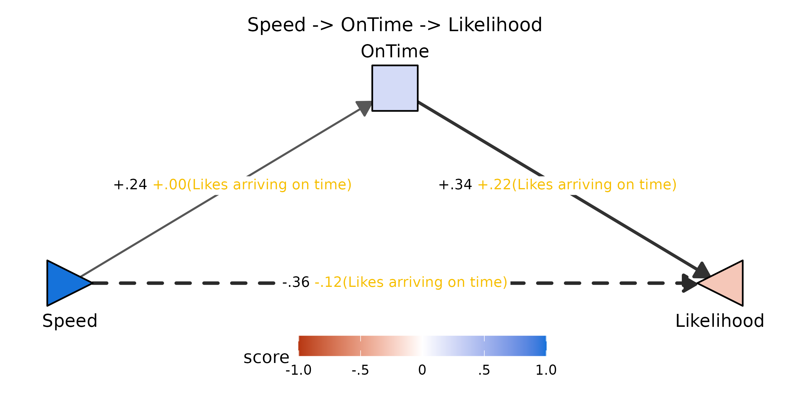
Toggling through low / mid / high values of the moderator makes the
valuation-only moderation pattern visible: the
Speed -> OnTime edge barely budges (FZ[X,M]
is null), while the OnTime -> Likelihood edge steepens
as endorsement of the item rises — and the Likelihood
triangle correspondingly lifts toward blue. The whole change rides on a
single arm.
plotPathXMY_widget(dec_lot, mediator = "OnTime",
X_label = "Speed", Y_label = "Likelihood",
Z_label = "Likes arriving on time",
X_shape = "rtTri",
format = "svg")![Likes arriving on time = -1]()
![Likes arriving on time = +0]()
![Likes arriving on time = +1]()
The structural alignment between the item and
F1[OnTime,Y] is part of what makes the moderation legible
here. The within-scenario regressions and a single direct self-report
seem to be picking up on related underlying weightings — a small but
useful self-check on the ESJT methodology.
The same principle extends to the “I regularly drive far over the
speed limit when driving” item from earlier in this vignette, but
at a different scope. That item can be read as a self-report of the
total F1*[X,Y] path — the direct link from X =
“drive over the limit” to Y = “likelihood of doing the action”, with no
mediators in the picture. Adding mediators is then a way of asking
why such an endorser feels inclined to speed: which shifted
expectations of particular outcomes, or shifted weightings of them, make
speeding feel sensible enough for the actor to endorse the item in the
first place. That framing fits with what we observed in the earlier
section — fast-driver tendency’s moderation spread across several
expectation paths because those paths are the per-mediator components
from which a total endorsement of the action is built.
Situation-level moderation: time pressure
The decomposition framework applies unchanged to situational moderators — they are handled statistically exactly as the personal moderator above; only the substantive reading differs.
timePressure was randomly assigned at the person level —
each respondent saw exactly one of three levels
(comfortably ahead of schedule, a bit late,
quite late). Code it as a continuous “lateness” variable
(0/.5/1), merge it, and fit both the moderated model and its
decomposition:
late_code <- c(`comfortably ahead of schedule` = 0,
`a bit late` = 0.5,
`quite late` = 1)
dat$late <- late_code[speedingESJT$cond$timePressure[match(dat$p,
speedingESJT$cond$p)]]
mod_s <- pathXMY(dat, X = "Speed", Y = "Likelihood",
M = mediators, Z = "late", Z.within = FALSE)
dec_s <- pathXMY_decompose(dat, X = "Speed", Y = "Likelihood",
M = mediators, Z = "late", Z.within = FALSE)The total moderation
kable0(dec_s$total, digits = 3,
caption = "Total moderation FZ*[X,Y] by time pressure (no mediator)")| est | se | z | pvalue | ci.lower | ci.upper |
|---|---|---|---|---|---|
| .038 | .028 | 1.354 | .176 | -.017 | .092 |
Where the fast-driver trait moved the Speed → Likelihood
link by a substantial, significant +.25, time
pressure’s total moderation is only +.04, and is
not statistically significant (p = .18). Read on its
own, that says time pressure does not reliably change how strongly
faster speeds pull respondents toward speeding.
A non-significant total is exactly where the decomposition earns its keep. It can mean the moderator is genuinely irrelevant — or that real route-specific shifts are present but too small, or too offsetting, to surface in the aggregate. Only the per-mediator breakdown tells the two apart.
Decomposition per mediator
kable0(pathXMY_to_F(dec_s$components), digits = 3,
caption = "Decomposition of the time-pressure moderation through each single mediator")| mediator | term | est | se | z | pvalue |
|---|---|---|---|---|---|
| MoneyCost | FZ[X,M]·F1[M,Y] | -.006 | .006 | -1.114 | .265 |
| MoneyCost | F1[X,M]·FZ[M,Y] | -.018 | .011 | -1.648 | .099 |
| MoneyCost | FZ[X,Y] (direct) | .066 | .030 | 2.239 | .025 |
| MoneyCost | sum (1+2+3) | .042 | NA | NA | NA |
| FunDrive | FZ[X,M]·F1[M,Y] | -.002 | .012 | -.183 | .855 |
| FunDrive | F1[X,M]·FZ[M,Y] | .000 | .000 | .094 | .925 |
| FunDrive | FZ[X,Y] (direct) | .043 | .025 | 1.732 | .083 |
| FunDrive | sum (1+2+3) | .041 | NA | NA | NA |
| IntQuality | FZ[X,M]·F1[M,Y] | .026 | .008 | 3.108 | .002 |
| IntQuality | F1[X,M]·FZ[M,Y] | -.000 | .001 | -.373 | .709 |
| IntQuality | FZ[X,Y] (direct) | .015 | .026 | .570 | .569 |
| IntQuality | sum (1+2+3) | .041 | NA | NA | NA |
| Appropriate | FZ[X,M]·F1[M,Y] | .025 | .014 | 1.857 | .063 |
| Appropriate | F1[X,M]·FZ[M,Y] | -.033 | .033 | -1.002 | .316 |
| Appropriate | FZ[X,Y] (direct) | .049 | .043 | 1.150 | .250 |
| Appropriate | sum (1+2+3) | .042 | NA | NA | NA |
| OnTime | FZ[X,M]·F1[M,Y] | .031 | .009 | 3.459 | .001 |
| OnTime | F1[X,M]·FZ[M,Y] | -.024 | .018 | -1.290 | .197 |
| OnTime | FZ[X,Y] (direct) | .030 | .031 | .973 | .331 |
| OnTime | sum (1+2+3) | .038 | NA | NA | NA |
| Crash | FZ[X,M]·F1[M,Y] | -.004 | .010 | -.361 | .718 |
| Crash | F1[X,M]·FZ[M,Y] | -.017 | .019 | -.878 | .380 |
| Crash | FZ[X,Y] (direct) | .063 | .038 | 1.656 | .098 |
| Crash | sum (1+2+3) | .043 | NA | NA | NA |
| Injured | FZ[X,M]·F1[M,Y] | -.006 | .011 | -.590 | .555 |
| Injured | F1[X,M]·FZ[M,Y] | -.016 | .021 | -.752 | .452 |
| Injured | FZ[X,Y] (direct) | .065 | .037 | 1.739 | .082 |
| Injured | sum (1+2+3) | .043 | NA | NA | NA |
| Ticket | FZ[X,M]·F1[M,Y] | .006 | .009 | .637 | .524 |
| Ticket | F1[X,M]·FZ[M,Y] | -.075 | .040 | -1.867 | .062 |
| Ticket | FZ[X,Y] (direct) | .114 | .051 | 2.223 | .026 |
| Ticket | sum (1+2+3) | .044 | NA | NA | NA |
The decomposition localizes the modest signal. Two
expectation-route entries (Term 1,
FZ[X,M]·F1[M,Y]) stand out: time pressure strengthens the
pull toward speeding through the expected OnTime gain
(+.031, p < .001) and the expected IntQuality
gain (+.026, p = .002), with Appropriate a
borderline third. The valuation route (Term 2,
F1[X,M]·FZ[M,Y]) is null for every mediator. The residual
FZ[X,Y] (direct) column — the total minus that mediator’s
two routes — adds nothing the total did not already say: with a
near-null total there is little for it to carry. So time pressure does
produce a couple of genuine, significant expectation-route
reasons to speed — chiefly a larger expected on-time payoff —
but they are small and never accumulate into a reliable aggregate
effect.
Which expectancies and values does time pressure shift?
group_kable(
pathXMY_pairtable(mod_s, c("fZ_XM", "fZ_MY")),
groups = c(" " = 1,
"Time-pressure moderation: expectation arm (FZ[X,M])" = 4,
"Time-pressure moderation: valuation arm (FZ[M,Y])" = 4),
col_labels = c("Mediator", "est", "se", "z", "p",
"est", "se", "z", "p")
)| Time-pressure moderation: expectation arm (FZ[X,M]) | Time-pressure moderation: valuation arm (FZ[M,Y]) | |||||||
|---|---|---|---|---|---|---|---|---|
| Mediator | est | se | z | p | est | se | z | p |
| MoneyCost | .017 | .015 | 1.137 | .255 | -.128 | .077 | -1.658 | .097 |
| FunDrive | -.003 | .017 | -.183 | .855 | .028 | .068 | .406 | .685 |
| IntQuality | .052 | .013 | 3.877 | .000 | -.043 | .084 | -.513 | .608 |
| Appropriate | .039 | .020 | 1.952 | .051 | .073 | .073 | .997 | .319 |
| OnTime | .086 | .017 | 5.165 | .000 | -.098 | .076 | -1.295 | .195 |
| Crash | .005 | .015 | .360 | .719 | -.055 | .063 | -.876 | .381 |
| Injured | .009 | .016 | .590 | .555 | -.053 | .070 | -.751 | .452 |
| Ticket | -.011 | .017 | -.637 | .524 | -.136 | .073 | -1.877 | .060 |
The raw arms tell the same story as the decomposition, one step
upstream. On the expectation side
(FZ[X,M]), time pressure significantly amplifies the
expected on-time gain from speeding (OnTime, p
< .001 — the largest effect) and the expected meeting-quality gain
(IntQuality, p < .001), with appropriateness a
borderline third (Appropriate, p ≈ .05). Other
expectations — including crash and ticket expectations — are not moved.
People under time pressure don’t expect different consequences
from speeding; they expect a larger payoff from getting there
on time.
On the valuation side (FZ[M,Y]),
nothing reaches p < .05: time pressure does not detectably
change how heavily any expected outcome is weighted. The two nearest
misses are both cost outcomes — Ticket (b = -.14,
p = .06) and MoneyCost (b = -.13,
p = .10) — hinting that respondents may weight the financial
costs of speeding slightly more heavily when rushed, but neither effect
is significant. This echoes the fast-driver case:
expectation-arm moderation is the common case in these data;
valuation-arm moderation is comparatively rare.
Do those shifts become reasons to speed?
The expectation-route (FZ[X,M]·F1[M,Y]) and
valuation-route (F1[X,M]·FZ[M,Y]) products turn the raw arm
shifts above into the per-mediator reasons of the decomposition
— Term 1 and Term 2, with their significance tests laid side by
side:
group_kable(
pathXMY_pairtable(mod_s, c("fZ_XM * f1_MY", "f1_XM * fZ_MY")),
groups = c(" " = 1,
"Expectation route (FZ[X,M] × F1[M,Y])" = 4,
"Valuation route (F1[X,M] × FZ[M,Y])" = 4),
col_labels = c("Mediator", "est", "se", "z", "p",
"est", "se", "z", "p")
)| Expectation route (FZ[X,M] × F1[M,Y]) | Valuation route (F1[X,M] × FZ[M,Y]) | |||||||
|---|---|---|---|---|---|---|---|---|
| Mediator | est | se | z | p | est | se | z | p |
| MoneyCost | -.006 | .006 | -1.114 | .265 | -.018 | .011 | -1.648 | .099 |
| FunDrive | -.002 | .012 | -.183 | .855 | .000 | .000 | .094 | .925 |
| IntQuality | .026 | .008 | 3.108 | .002 | -.000 | .001 | -.373 | .709 |
| Appropriate | .025 | .014 | 1.857 | .063 | -.033 | .033 | -1.002 | .316 |
| OnTime | .031 | .009 | 3.459 | .001 | -.024 | .018 | -1.290 | .197 |
| Crash | -.004 | .010 | -.361 | .718 | -.017 | .019 | -.878 | .380 |
| Injured | -.006 | .011 | -.590 | .555 | -.016 | .021 | -.752 | .452 |
| Ticket | .006 | .009 | .637 | .524 | -.075 | .040 | -1.867 | .062 |
The only reliable reasons are expectation-route ones: time
pressure strengthens the pull toward speeding through the expected
OnTime (p < .001) and IntQuality
(p = .002) gains, with Appropriate borderline
(p = .06). The valuation route yields nothing significant
(nearest: Ticket, p = .06). But unlike the
fast-driver case — where six expectation-route reasons summed to a
large, significant +.25 total — here the two genuine
reasons are modest and, as the total moderation already showed, do not
accumulate into a statistically reliable change in overall speeding
propensity. The decomposition’s value in this example is exactly that:
it pinpoints which expectations time pressure shifts, and
confirms those shifts are real, even though the aggregate moderation is
not itself significant.
Ordered mediators: causal chains with pathF()
Everything to this point treats the eight expected outcomes as
parallel mediators: each sits side by side between
Speed and Likelihood, and no mediator is
allowed to affect another. For most of the outcome set that is a
reasonable default — but for some pairs the parallel reading is clearly
wrong. An injury expectation should ride on a crash expectation (you are
not injured by a crash that doesn’t happen), and a speeding ticket is
the most obvious way driving fast costs money. Pairs like
Crash → Injured and Ticket → MoneyCost are
ordered: one expected outcome sits causally upstream of the
other.
pathF() generalizes pathXMY() to this case.
Given the variables in presumed causal order, it expands them into the
saturated cascade — every causally upstream variable
predicts every downstream variable — fits the whole system as a single
lavaan model, and enumerates the indirect effect along every directed
route from X to Y. Parameter labels carry the
full source-target names (f1_Speed_Crash is the display
form F1[Speed,Crash]), and routes appear as
*-joined products of their edges.
The crash-injury chain
chain1 <- pathF(dat, order = c("Speed", "Crash", "Injured", "Likelihood"))
kable0(chain1$tidy[, c("param","est","se","z","pvalue")], digits = 3,
caption = "Saturated cascade Speed -> Crash -> Injured -> Likelihood")| param | est | se | z | pvalue |
|---|---|---|---|---|
| f1_Speed_Crash | .306 | .015 | 19.846 | .000 |
| f1_Speed_Injured | .093 | .016 | 5.940 | .000 |
| f1_Crash_Injured | .688 | .042 | 16.530 | .000 |
| f1_Speed_Likelihood | -.034 | .041 | -.842 | .400 |
| f1_Crash_Likelihood | -.402 | .089 | -4.510 | .000 |
| f1_Injured_Likelihood | -.401 | .103 | -3.893 | .000 |
| f1_Speed_Crash * f1_Crash_Injured * f1_Injured_Likelihood | -.085 | .022 | -3.853 | .000 |
| f1_Speed_Crash * f1_Crash_Likelihood | -.123 | .028 | -4.445 | .000 |
| f1_Speed_Injured * f1_Injured_Likelihood | -.037 | .012 | -3.034 | .002 |
The structural edges tell an intuitive story.
F1[Speed,Crash] = .31: faster speeds raise the crash
expectation, as in the parallel fan. The new information is in the next
two rows. F1[Crash,Injured] = .69 is the strongest edge in
the model — the injury expectation tracks the crash expectation closely
— while the direct F1[Speed,Injured] path, net of
Crash, falls to .09. In the parallel fan the
Speed → Injured slope was about .30; the
cascade attributes the bulk of that movement to the crash expectation
sitting upstream (.31 × .69 ≈ .21 of it), leaving a
comparatively small residual direct path. That accords with how the
injury expectation should work: speed raises injury risk
because it raises crash risk.
The bottom three rows are the route decomposition: the cascade has
three directed routes from Speed to Likelihood
through the mediators (through both, via Crash alone, via
Injured alone), each estimated as the product of its edges
with a delta-method SE. The three-edge route
Speed → Crash → Injured → Likelihood carries
-.09 (p < .001) — a chained reason not to
speed that the parallel model can state only piecemeal.
plotPathF() draws the fitted model directly from the
pathF() return, with no layout arguments: each node’s
horizontal position is its causal depth, edges between adjacent depths
draw straight, and skip edges (here, the residual direct paths) bow into
arcs — alternating above and below the chain so converging arrows stay
legible. The familiar conventions carry over from
plotPathXMY(): node fill is the implied expected score at
Speed = 1 propagated through the cascade, negative edges
are dashed, and edge thickness and darkness scale with magnitude.
plotPathF(chain1,
title = "The crash-injury cascade as a field diagram")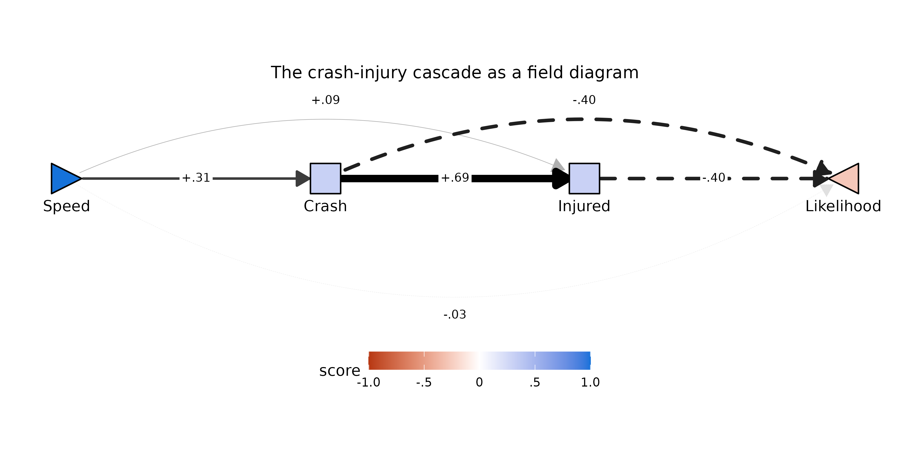
The diagram makes the chain’s verdict visible at a glance: the
production line along the baseline
(Speed → Crash → Injured, with the .69
crash-injury edge the thickest in the field), the two dashed cost routes
arcing into Likelihood from above, and the residual direct
Speed → Likelihood arc below the chain rendered so faint it
nearly vanishes — the structural restatement of the near-zero
-.03 residual. Likelihood’s pale red fill is
the implied total at Speed = 1 propagated through every
route.
The ticket-money chain
chain2 <- pathF(dat, order = c("Speed", "Ticket", "MoneyCost", "Likelihood"))
kable0(chain2$tidy[, c("param","est","se","z","pvalue")], digits = 3,
caption = "Saturated cascade Speed -> Ticket -> MoneyCost -> Likelihood")| param | est | se | z | pvalue |
|---|---|---|---|---|
| f1_Speed_Ticket | .551 | .017 | 31.909 | .000 |
| f1_Speed_MoneyCost | -.001 | .020 | -.074 | .941 |
| f1_Ticket_MoneyCost | .255 | .039 | 6.544 | .000 |
| f1_Speed_Likelihood | .020 | .051 | .393 | .694 |
| f1_Ticket_Likelihood | -.492 | .077 | -6.376 | .000 |
| f1_MoneyCost_Likelihood | -.204 | .085 | -2.408 | .016 |
| f1_Speed_Ticket * f1_Ticket_MoneyCost * f1_MoneyCost_Likelihood | -.029 | .013 | -2.214 | .027 |
| f1_Speed_Ticket * f1_Ticket_Likelihood | -.271 | .043 | -6.333 | .000 |
| f1_Speed_MoneyCost * f1_MoneyCost_Likelihood | .000 | .004 | .074 | .941 |
Here the upstream attribution is nearly complete:
F1[Speed,MoneyCost] = -.00 (p = .92) once
Ticket is in the model. Respondents do not appear to expect
faster driving to cost money in itself; the money-cost expectation moves
with speed only by way of the ticket expectation
(F1[Speed,Ticket] = .55,
F1[Ticket,MoneyCost] = .26). The parallel fan reported a
modest positive Speed → MoneyCost loading; the cascade
locates its origin one step upstream.
Sliding-Z: moderation decomposed through a chain
The moderation decomposition generalizes along with the model. With a
single mediator, Z’s total moderation splits into an
expectation term, a valuation term, and a residual. In a chain, the same
logic produces one term per edge position as the
moderator “slides” through the route — for the two-mediator chain
X → M1 → M2 → Y:
with the ⋯ collecting the analogous slide terms for the
shorter sub-routes of the saturated cascade, and FZ[X,Y]
the residual direct moderation. pathF_decompose() fits the
bare total model alongside the cascade and tabulates every term, their
sum, and the gap between the sum and the total:
dec_pf <- pathF_decompose(dat2,
order = c("Speed", "Crash", "Injured", "Likelihood"),
Z = "SRFastDriver", Z.within = FALSE)
kable0(subset(dec_pf$components, block == "fZ")[, c("term","est","se","z","pvalue")],
digits = 3,
caption = "Sliding-Z decomposition of the fast-driver moderation through the crash-injury chain")| term | est | se | z | pvalue | |
|---|---|---|---|---|---|
| 8 | fZ_Speed_Crash * f1_Crash_Injured * f1_Injured_Likelihood | .015 | .005 | 2.742 | .006 |
| 9 | f1_Speed_Crash * fZ_Crash_Injured * f1_Injured_Likelihood | .001 | .005 | .202 | .840 |
| 10 | f1_Speed_Crash * f1_Crash_Injured * fZ_Injured_Likelihood | .012 | .023 | .504 | .615 |
| 11 | fZ_Speed_Crash * f1_Crash_Likelihood | .023 | .008 | 2.918 | .004 |
| 12 | f1_Speed_Crash * fZ_Crash_Likelihood | -.037 | .024 | -1.563 | .118 |
| 13 | fZ_Speed_Injured * f1_Injured_Likelihood | .007 | .006 | 1.286 | .199 |
| 14 | f1_Speed_Injured * fZ_Injured_Likelihood | .006 | .011 | .504 | .614 |
| 15 | fZ_Speed_Likelihood (direct) | .225 | .035 | 6.345 | .000 |
| 16 | sum (routes + direct) | .251 | NA | NA | NA |
| 17 | total (no-mediator) | .253 | .028 | NA | NA |
| 18 | gap (total - sum) | .002 | NA | NA | NA |
The total being decomposed is the same FZ*[X,Y] ≈ .25
indexed in the fast-driver section above. The only slide terms that
reach significance are the two where the moderation sits on the
first edge — FZ[Speed,Crash] propagating down the
three-edge route (+.01, p = .006) and down the two-edge route
through Crash (+.02, p = .003). That is the
chain-level restatement of the expectation-route story from the parallel
analysis: self-described fast drivers expect less crash risk from speed,
and that one shifted expectation echoes down every route it heads. The
residual direct term (+.22) again absorbs what the other seven mediators
would carry.
The sum (routes + direct) and
total (no-mediator) rows put the approximation quality on
the table: the first-order identity is accurate here to about
.002 (the gap row), or under 1% of the total.
Across these data the gap stays similarly small for three-, four-, and
five-node chains — the dropped higher-order terms are products of two or
more FZ coefficients and shrink quickly. What does
erode with chain length is per-term precision: a route product of three
or four small coefficients has a small estimate and a wide relative SE,
so individual slide terms in long chains are rarely significant even
when the accounting as a whole is nearly exact.
The same moderated cascade as a field diagram —
plotPathF() accepts the pathF_decompose()
return directly, and each edge label carries the F1
coefficient with its gold
FZ companion, following the package’s moderator-color
convention. plotPathF_widget() stitches the diagram’s three
views into a Back/Forward toggle at pixel-identical layout: the
decomposed field first, then the normative frame (the
same F1 paths with the moderation hidden), then the
moderation frame (every edge swapped for its
FZ counterpart, all gold). Clicking
Forward peels the one diagram apart into its black and
gold layers in place. The moderation frame is drawn with
scale_max_moderation = .3 — tighter than the normative
.8 cap, as elsewhere in this vignette, because
FZ magnitudes run smaller:
plotPathF_widget(dec_pf, Z_label = "SRFast",
title = "The crash-injury cascade, moderated by fast-driver tendency",
scale_max_moderation = 0.3,
format = "svg")![The crash-injury cascade, moderated by fast-driver tendency]()
![The crash-injury cascade, moderated by fast-driver tendency [normative effects]]()
![The crash-injury cascade, moderated by fast-driver tendency [moderation effects]]()
The gold fragments of the decomposed frame locate the moderation
visually, and the moderation frame isolates them: the working shifts sit
on the first edge (-.07(SRFast) on
Speed → Crash) and on the residual direct arc below the
chain (+.22(SRFast)), while the interior production edge
Crash → Injured is essentially unmoderated
(-.01) — fast drivers discount the onset of
trouble, not its physical consequences once underway. A
Z_value argument to plotPathF() instead
collapses the diagram to the effective field at a chosen level of the
moderator, as in the two-panel
low-Z/high-Z view earlier.
Arbitrary path structures
The cascade is the default reading of an ordered variable list, but
pathF() also accepts an explicit path diagram via
lavaan-style formulas — useful when some edges should be absent rather
than estimated. For instance, a two-route model in which
OnTime and Appropriate mediate in parallel but
no direct Speed → Likelihood edge through the other six
outcomes is wanted:
dag <- pathF(dat, paths = c("Likelihood ~ Appropriate + OnTime",
"Appropriate ~ Speed",
"OnTime ~ Speed"),
X = "Speed", Y = "Likelihood")
kable0(dag$tidy[, c("param","est","se","z","pvalue")], digits = 3,
caption = "A two-route DAG specified with paths=")| param | est | se | z | pvalue |
|---|---|---|---|---|
| f1_Appropriate_Likelihood | .698 | .043 | 16.060 | .000 |
| f1_OnTime_Likelihood | .252 | .063 | 4.020 | .000 |
| f1_Speed_Appropriate | -.446 | .021 | -20.851 | .000 |
| f1_Speed_OnTime | .241 | .018 | 13.580 | .000 |
| f1_Speed_Appropriate * f1_Appropriate_Likelihood | -.311 | .026 | -12.115 | .000 |
| f1_Speed_OnTime * f1_OnTime_Likelihood | .061 | .016 | 3.759 | .000 |
Every directed route from X to Y present in
the diagram is enumerated automatically, exactly as in the cascade. The
same plotPathF() call handles this structure with no layout
hints — parallel mediators share a causal depth, so they stack
vertically and the familiar fan re-emerges on its own:
plotPathF(dag, title = "The two-route DAG")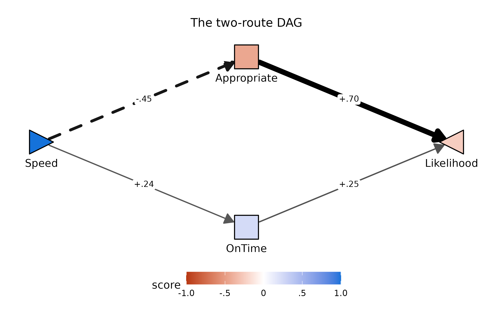
pathXMY() remains the right tool for the
parallel-mediator screening passes that make up most of this vignette;
pathF() takes over where the mediators themselves have
causal structure worth modeling.
Scoring named trait composites
If you want the Big Five and other named scales from Wood, Harms,
& Cho (2023), use the recipes in
speedingESJT$codebook$trait_scales:
tr <- speedingESJT$traits
tr$Extra <- rowMeans(cbind(1 - tr$SR_15, tr$SR_16, tr$SR_17), na.rm = TRUE)
tr$Agree <- rowMeans(cbind(tr$SR_18, 1 - tr$SR_19, tr$SR_20), na.rm = TRUE)
tr$Consc <- rowMeans(cbind(1 - tr$SR_21, 1 - tr$SR_22, tr$SR_23), na.rm = TRUE)
tr$Neuro <- rowMeans(cbind(tr$SR_24, tr$SR_25, 1 - tr$SR_26), na.rm = TRUE)
tr$Open <- rowMeans(cbind(tr$SR_27, 1 - tr$SR_28, tr$SR_29), na.rm = TRUE)Function reference
See ?pathXMY, ?pathXMY_pairtable,
?group_kable, ?pathXMY_decompose,
?pathF, ?pathF_decompose,
?plotPathXMY, ?plotPathXMY_ZLH,
?plotPathXMY_widget, and ?speedingESJT.